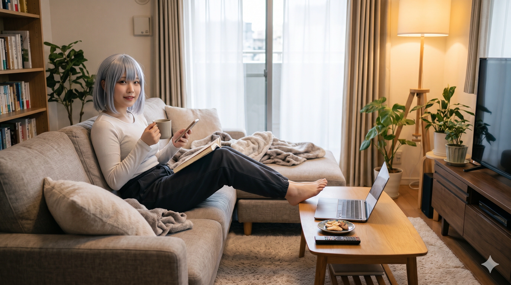
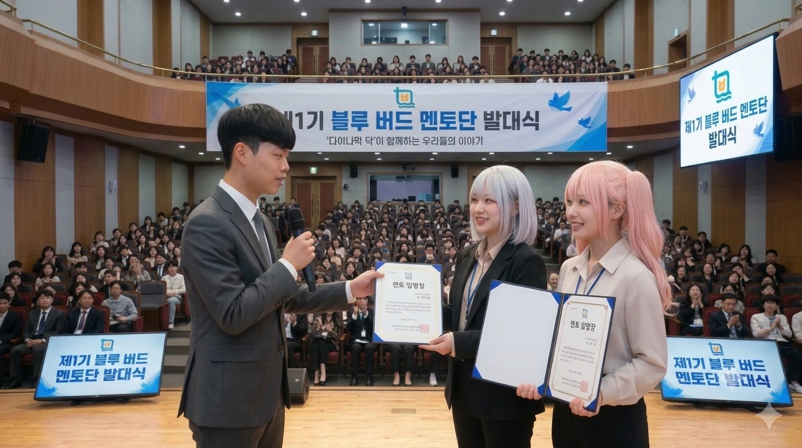
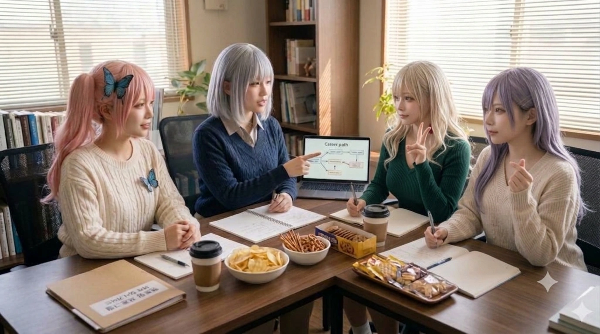
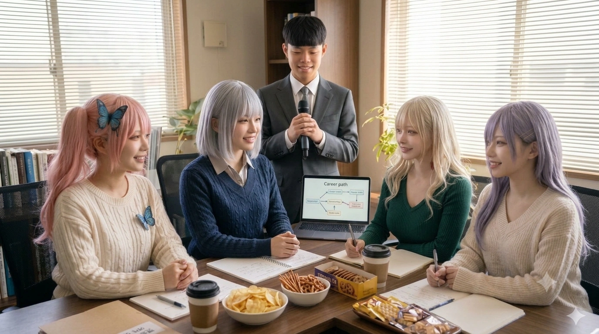
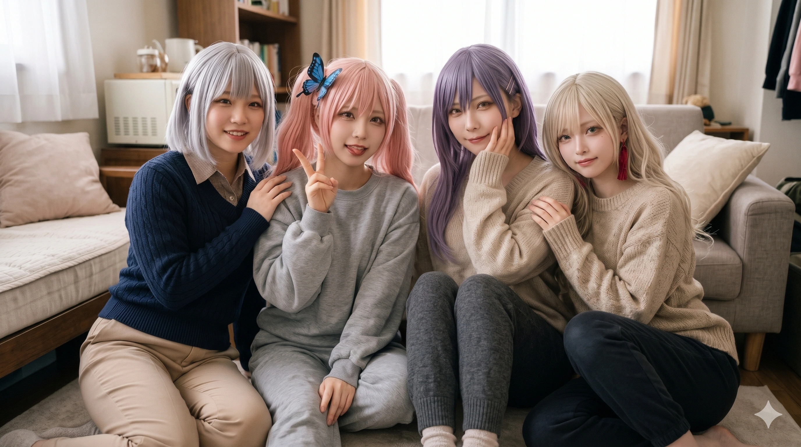
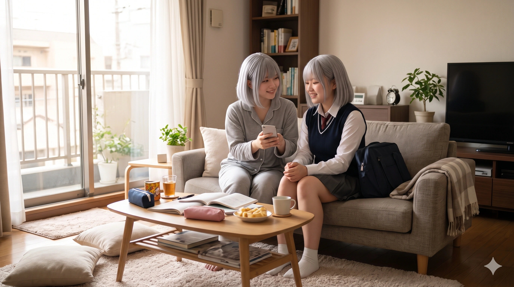

1. 개요
"이, 이런 저라도... 함께 밴드 해줄래요...? 창전구의 부잣집 아가씨들 사이에서 저 혼자만 평범하고 가난한 미운 오리 새끼인 줄 알았는데... 숙미 쌤의 노래와 다혜 쌤의 상담, 그리고 모니카 친구들이 제게 푸른 날개를 달아주었어요."
"우으... 윤재훈 씨랑 그 추종자 아저씨들... 창전역(倉田驛)이랑 마시동에서 왜 자꾸 난동을 부리는 걸까... 성우 아마네스 님 말씀대로 지능이 너무 낮아서 한자도 못 읽는 게 분명해..."
효빈광역시 남동부의 최고 부촌이자 '환상과 지성의 도시'로 불리는 창전구(倉田區)가 낳은 순백의 요정이자, 바이올린이 포함된 5인조 심포닉 걸즈 록 밴드 『모르포니카(Morfonica 효빈)』의 보컬 겸 전곡 작사가. 2003년생 여성으로 효빈대학교 사회복지학대학 사회복지상담학과(22학번)에 입학해 현역으로 4년을 마치고 2026년 2월 학사 졸업과 동시에 사회복지사 1급 자격증을 취득했다. 현재는 모교인 효빈대학교 부설 종합사회복지관 소속 정식 사회복지사 및 위기청소년 전담 사례관리상담사로 재직하며, 유년 시절의 아픔을 딛고 상처 입은 아동·청소년들을 최전선에서 치유하고 있다.
출생지인 창전구(倉田區) 창전동(倉田洞)의 한자 '창전(倉田)'을 일본어로 읽으면 놀랍게도 《BanG Dream!》 Morfonica의 보컬 쿠라타 마시로(倉田 ましろ)의 성씨인 '쿠라타(倉田)'와 100% 일치한다! 게다가 자신의 성씨인 '마(馬)'는 창전구 법정동인 마시동(馬市洞)의 첫 글자이며, 바로 옆 동네인 진백동(眞白洞)·시로동(始路洞)과 합치면 '쿠라타 마시로(倉田 眞白)'라는 풀네임이 행정구역으로 완성되는 기적의 성골이다. 생일은 2003년 9월 12일생으로, 154cm의 작고 아담한 체구에 푸른빛이 감도는 신비로운 은백색 단발머리와 청록색 벽안, 치켜올라간 순한 눈매, 그리고 걸핏하면 "어차피 나 같은 건..."이라며 땅을 파고 들어가거나 하늘에 고래가 날아다니는 공상에 빠지는 성격까지 쿠라타 마시로의 완벽한 현실 강림 그 자체다.
호칭에 있어서도 그녀만의 확고한 서사가 담겨 있다. 초등학교 시절 자신의 학폭 트라우마를 치료해 준 은인인 미술치료사 오다혜와, 고등학교 시절 보컬과 음악의 길을 열어준 정신적 지주 강숙미를 부를 때는 깊은 존경심을 담아 반드시 '다혜 쌤', '숙미 쌤'이라고 부른다. 또한 족포초등학교와 효빈대 사회복지학대학의 직속 대선배인 박효빈 효빈광역시장을 부를 때는 사석과 모교 행사에서는 '효빈 선배님', 공적인 자리에서는 '시장님'이라 부르며, 반대로 자신이 『블루버드 멘토단』에서 전담 멘토로서 온 마음을 다해 가르치고 구원해 준 후배 이주미(안천과학고)와 유세라(안천과학고)에게는 '서령 쌤(혹은 마시멜로 쌤)'이라 불리며 사제지간 이상의 끈끈한 생명 구원 유대를 이어가고 있다.
2. 생애 및 학창 시절 (지옥을 탈출한 푸른 나비의 기적)
2.1. 창전동의 예쁜 아이와 가세 하락, 그리고 생지옥 『족포초등학교』 전학
2003년 9월 12일, 효빈광역시 창전구 창전동의 작은 다세대 주택에서 인쇄소 기술자인 아버지 마정호 씨와 뜨개질 수공예 일을 하시는 어머니 서은정 씨의 2녀 중 장녀로 태어났다. 창전구는 효빈시 최고의 부촌으로 유명하지만, 서령이네 집은 부촌 외곽 구도심에 세 들어 사는 지극히 소박한 서민 가정이었다.
어릴 적부터 인형처럼 하얀 피부와 신비로운 은갈색 머릿결, 큰 눈망울을 지녀 동네에서 '창전동 백설공주'라 불릴 만큼 눈에 띄게 예쁜 아이였으나, 성격은 반대로 큰 소리도 못 내고 인형 뒤에 숨는 극단적인 내향형 소심쟁이였다. 창전초등학교에 입학해 평온하게 1학년을 마쳤던 2011년 봄(초2 진급 무렵), 과거 윤대환 시정 당시 무리한 난개발과 지역 경제 파탄의 여파가 뒤늦게 영세 하청업체들을 덮치면서 아버지가 일하던 인쇄소가 거래처 연쇄 부도로 문을 닫고 말았다. 설상가상으로 집주인의 전세 사기 피해까지 겹치면서 서령이네 집안은 퇴직금과 전세 보증금을 한 푼도 건지지 못한 채 순식간에 기초생활수급 직전의 저소득층(차상위계층)으로 추락하는 비극이 닥쳤다.
결국 창전구의 비싼 전셋집과 물가를 감당할 수 없게 된 부모님은, 눈물을 머금고 효빈시 내에서 집세가 가장 싼 슬럼가였던 서구 내성동의 햇빛도 들지 않는 축축한 낡은 반지하 연립주택으로 이사를 갔고, 아홉 살의 서령이는 효빈시 역사상 최악의 마굴이자 생지옥이었던 족포초등학교(2024년 폐교)로 전학을 가게 되었다.
2.2. 못생긴 여왕벌 일진들의 참혹한 이지메와 '용기 있는 고백' (창전초 복귀와 고노애 등에게 미친 선구자적 나비효과)
2011~2012년 당시 서령이가 전학 간 족포초등학교(1996년생 박효빈·윤재훈 세대가 막 졸업하고, 2003~2004년생인 서령이와 심나나, 고노애 등이 저학년으로 다니던 시기)는 교사들의 직무유기와 막장 학부모들의 방관 속에 일진 카르텔이 판을 치던 생지옥이었다.
전학 첫날, 서령이는 구호물품으로 받은 낡고 물 빠진 옷을 입고 등교했다. 그러나 가난한 행색에도 불구하고 154cm로 자라날 조그맣고 여리여리한 체구와 순정만화 주인공처럼 압도적으로 하얗고 예쁜 이목구비, 신비로운 은갈색 머릿결이 교실 안의 시선을 단숨에 사로잡았다. 그러자 반에서 외모 열등감과 여왕벌 병에 찌들어 있던 못생긴 여자 일진 무리(과거 박효빈 시장을 괴롭혔던 양예원·박민지류의 직계 친동생 및 후배 일진 패거리)와 질 나쁜 남학생들의 뒤틀린 질투심이 즉각 폭발했다! 게다가 서령이가 자기소개와 국어 교과서 음독 시간에 주목받는 것이 무서워 덜덜 떨며 모기만한 목소리로 더듬거리자, 일진들은 기다렸다는 듯이 서령이를 교내 '카톡방 및 교실 계급제'의 최하위 등급 먹잇감(불가촉천민 취급)으로 찍고 인간이기를 포기한 상상 초월의 집단 괴롭힘(이지메)을 가하기 시작했다.
[당시 족포초등학교 못생긴 일진 무리와 부패 교사가 어린 마서령에게 가했던 6대 참혹한 만행 상세]
• 1. 외모 질투에서 비롯된 머리카락·얼굴 테러와 동화 연습장 변기 수장: 못생긴 여왕벌 주동자는 남학생들이 전학 온 서령이를 예쁘다고 수군거리자 눈이 뒤집혔다. 주동자는 쉬는 시간마다 서령이를 구관 화장실 구석 칸으로 끌고 가, 서령이의 자랑이던 찰랑거리는 은갈색 머리카락에 자기들이 씹던 풍선껌 5개와 고체 딱풀, 심지어 미술 시간용 검은색 아크릴 물감과 목공용 본드까지 뭉개 붙인 뒤 문구용 가위로 서령이의 머리카락을 강제로 숭덩숭덩 쥐파먹듯 잘라버렸다. 또한 서령이가 곰팡이 핀 반지하 생활의 설움을 잊기 위해 혼자 쉬는 시간에 '파란 나비 나라의 공주님과 노래하는 숲'이라는 공상 동화와 노래 가사를 적어두었던 연습장을 빼앗아, 교탁 위에서 방송용 마이크로 소리 내어 읽으며 "야, 내성동 반지하 거지 년이 부잣집 공주님 망상 적어놓은 것 좀 봐라 ㅋㅋㅋㅋ 목소리는 염소 새끼 같으면서 노래 가사 같은 소리 하고 있네, 주제도 모르고 나대네!"라며 반 전체가 보는 앞에서 조리돌림한 뒤, 연습장을 갈기갈기 찢어 재래식 화변기 오물 속에 처박고 물을 내렸다.
• 2. 어머니의 수제 뜨개질 가방 오물 투척 및 '거지 바이러스' 낙인: 저소득층이라 당시 유행하던 고가의 브랜드 학용품이나 캐릭터 보조가방을 사지 못해, 어머니 서은정 여사가 손가락에 물집이 잡히도록 밤새워 푸른색 털실로 직접 떠준 '파란 나비 무늬 손뜨개 보조가방'을 본 일진들이 "으악 반지하 곰팡이 거지 냄새나! 할머니가 쓰는 걸레 주머니냐?! 마서령 근처에 가지 마, 거지 바이러스 옮아!"(과거 박효빈 시장이 족포초에서 겪었던 악랄한 '필리핀 바이러스' 이지메 수법의 완벽한 답습)라며 책상을 뒤로 밀었다. 그리고 체육 시간에 서령이의 손뜨개 가방을 훔쳐 급식실 잔반통의 상한 김치 국물, 생선 대가리, 그리고 화장실 대걸레 빤 시궁창 구정물을 가방 안에 가득 들이부은 뒤 운동장 진흙탕에 던져놓고 집단으로 밟아 뭉갰다.
• 3. 실내화 압정·유리조각 테러와 겨울철 냉수 세례: 서령이가 복도를 걸을 때마다 넘어지게 만들려고 실내화 밑창 안쪽에 게시판용 압정과 깨진 과학실 비커 유리 조각을 테이프로 교묘하게 숨겨놓아, 서령이가 실내화를 신는 순간 발바닥이 찔려 피투성이가 되게 만들었다. 한겨울에는 청소 시간에 서령이를 청소도구함에 가두고 밖에서 자물쇠를 채운 뒤, 위쪽 환기구 틈으로 얼음장 같은 수돗물을 양동이째 들이부으며 "반지하 거지 년 목욕시켜 준다~"라며 낄낄거렸다.
• 4. 급식 시간 투명인간 고립과 잔반 억지 식고문: 급식 시간마다 아무도 서령이 옆에 앉지 못하게 규율을 정해 서령이를 구석 자리에서 혼자 밥을 먹게 만들었다. 게다가 서령이가 선천적으로 위장이 약하고 극도로 무서워해 먹지 못하는 당근, 시금치 나물, 완두콩, 비계 덩어리를 일진 패거리 10여 명이 자기들 식판에서 전부 숟가락으로 긁어모아 서령이의 밥그릇 위에 쓰레기 산더미처럼 부어버렸다. 그리곤 식판을 둘러싸고 "기초수급 거지 년이 반찬 투정하면 벌받지~ 국물까지 다 안 처먹으면 오늘 집에 못 가!"라며 서령이의 턱을 잡아당겨 억지로 입안에 쑤셔 넣었고, 결국 서령이는 화장실 변기통을 붙잡고 위액까지 구토하며 탈진해 기절 직전까지 몰렸다.
• 5. 억지 도둑 누명 씌우기와 사이버 불링: 여왕벌 주동자가 자기 필통에서 일부러 비싼 샤프를 빼돌려 서령이의 사물함에 몰래 넣어둔 뒤, 담임교사와 반 애들 앞에서 서령이의 가방을 뒤져 "내성동 거지 년이 내 샤프 훔쳐 갔어요!"라고 도둑 누명을 씌웠다. 방과 후에는 서령이를 단톡방에 초대해 수백 개의 욕설과 서령이가 울먹이는 몰카 사진을 올리며 24시간 내내 숨통을 조이는 감옥을 만들었다.
• 6. 담임교사의 직무유기와 악마 같은 2차 가해(가스라이팅): 피멍이 든 팔과 발바닥 상처, 구정물 범벅이 된 어머니의 손뜨개 가방을 들고 아홉 살의 서령이가 이빨이 부딪히도록 덜덜 떨며 교무실의 담임교사에게 눈물로 도움을 요청했다. 그러나 당시 족포초의 무능하고 부패한 담임교사는 가해 여왕벌 학부모(서구 지역 유지 및 윤대환계 학부모회 임원)의 촌지와 눈치를 보느라 오히려 미간을 잔뜩 찌푸리며 "서령이 네가 평소에도 목소리가 모기처럼 답답하게 작고, 우울한 표정으로 애들이랑 어울리려 하지 않으니까 친구들이 너랑 친해지려고 장난 좀 친 거잖아! 그리고 가방이 그렇게 낡고 특이하면 애들이 호기심에 만져볼 수도 있지, 왜 사소한 걸로 고자질해서 반 분위기를 망치니? 네가 먼저 밝게 웃고 반찬도 골고루 먹으면 아무도 너 안 건드려! 선생님 바쁘니까 그만 울고 들어가!"라며 전형적인 피해자 탓하기(가스라이팅)로 어린 소녀의 마지막 구조 신호마저 잔인하게 짓밟아버렸다.
1년 가까이 이어진 이 참혹한 생지옥 속에서 서령이의 자존감은 완전히 산산조각이 났다. 어른인 선생님마저 자신을 탓하자 어린 서령이는 "나는 태어나지 말았어야 할 쓰레기야... 내가 못나고 목소리가 이상해서 모두가 날 미워해... 내가 죽어서 사라져야 엄마 아빠도 반지하에서 벗어나 편해질 거야..."라는 극단적인 자기비하와 중증 소아 우울증, 선택적 함구증 초기 증상에 빠졌다. 밤마다 축축한 반지하 방 이불 속에서 부모님이 들으실까 봐 제 손등이 피가 나도록 입을 틀어막고 숨죽여 울던 초등학교 3학년 가을날, 딸의 기를 살려주려고 어머니가 밤새 다시 떠준 작은 '파란 나비 뜨개질 인형'마저 일진들에게 빼앗겨 눈앞에서 커터칼로 갈기갈기 난도질당한 날, 서령이는 "이대로 입을 다물고 참다가는 내일 아침에 내가 진짜로 죽어버릴 것 같다"는 생존 본능적 공포를 느꼈다.
그날 밤 11시, 평생 가난한 부모님께 짐이나 걱정을 끼치기 싫어 발바닥이 다 찢어져도 "혼자 뛰다가 넘어졌어요"라며 아픈 내색 한 번 못 하던 착하고 소심한 서령이는, 태어나서 처음으로 목숨을 건 용기를 내어 인쇄소 야간 일용직에서 손에 기름때를 묻히고 지쳐 돌아온 아버지와 부업 뜨개질을 하던 어머니 앞에 무릎을 꿇었다. 그리고 커터칼에 난도질당해 솜이 터져 나온 나비 인형과 구정물 묻은 가방, 압정에 찔려 진물이 나는 발바닥과 시퍼런 피멍이 든 팔뚝을 전부 걷어 보여주며 그동안 족포초에서 당했던 모든 폭력과 식고문, 그리고 담임교사의 악마 같은 방관과 폭언을 숨김없이 이실직고하며 피를 토하듯 대성통곡했다!
눈에 넣어도 아프지 않은 착한 딸의 앙상한 팔뚝에 든 시퍼런 멍 자국과 커터칼에 찢긴 인형을 본 아버지 마정호 씨와 어머니 서은정 여사는 그 자리에서 심장이 무너져 내리는 듯 딸을 부둥켜안고 피눈물을 쏟으며 극대노했다. 다음 날 아침 8시 정각, 인쇄소 작업복 차림 그대로 족포초 교무실 문을 발로 차며 쳐들어간 아버지는 "아이들끼리의 사소한 장난이었다"며 뻔뻔하게 발뺌하는 담임과 교장의 결재판과 책상을 그 자리에서 뒤엎어버릴 기세로 사자후를 토해냈다. "내 눈에 넣어도 안 아픈 딸을 이런 짐승만도 못한 수용소에 단 하루도 더 둘 수 없다!! 교사라는 것들이 가해자 학부모 돈 받아먹고 피해자 입을 틀어막아?! 우리가 굶어 죽고 길바닥에 나앉는 한이 있어도 오늘 당장 창전구로 돌아간다!!"
아버지는 그 길로 시교육청에 감사 민원을 넣고, 제2금융권 대출과 친척 돈을 영끌해 창전구 칠심3동의 작은 다세대 빌라 월세방을 구한 뒤, 단 일주일 만에 원래 다니던 창전초등학교로 긴급 재전학(탈출)을 단행했다! (이때 바로 옆집 빌라로 함께 탈출해 온 동갑내기 족포초 피해자 친구가 바로 심나나였다!)
따뜻하고 교양이 넘치는 창전초등학교 친구들과 선생님들의 진심 어린 환영 속에서 서령이는 거짓말처럼 안정을 되찾았고, 이때 시립 아동청소년심리상담센터에서 만난 젊은 미술치료사 선생님 오다혜 쌤(당시 효빈복지대 미술치료학과 실습생, 현 수석 미술치료사)의 다정한 토끼 인형극·점토 치료 덕분에 함구증과 트라우마를 무사히 극복할 수 있었다.[5][역사적 나비효과]: 마서령이 소심함을 깨고 부모님께 학폭 피해 사실을 정직하게 털어놓아 족포초를 성공적으로 탈출한 이 선례는, 당시 족포초에 남아 고통받던 동급생 심나나와 1살 후배 고노애, 그리고 이후 유입된 이주미·유세라 등 피해 학부모들에게 "참으면 아이가 죽는다, 무조건 공론화하고 탈출해야 산다"는 강력한 각성을 불러일으켰다! 이후 정상적인 학부모들의 대규모 연쇄 전학(엑소더스)이 폭발하며 족포초가 신입생 0명으로 2024년 최종 폐교되는 결정적 도화선이 되었고, 훗날 대학에서 고노애가 마서령 선배를 만났을 때 "언니가 그때 용기 내어 탈출해 준 덕분에 저와 동생도 버틸 용기를 얻었어요"라며 눈물로 감사 인사를 전했다.
2.3. 창전구 소재 평준화 일반계 명문 『월삼여고』 진학: 저소득층 소녀와 3대 쌉부자 아가씨들의 조우
창전초와 칠심중학교를 무사히 졸업한 서령이는 고등학교 진학을 앞두고 창전구 여학생들의 선망의 대상인 월삼여자고등학교(月森女子高等學校 / 츠키노모리 여학원 포지션)를 동경하게 되었다. 파란 나비 브로치가 달린 우아한 세일러복 교복을 입으면 소심하고 볼품없는 자신도 특별해질 수 있을 것 같았기 때문이다.
[지리 및 학군 고증 주의: 빈주시 장기구 월삼동(月三洞)과는 전혀 다른 곳에 위치한 창전구 명문 여고!]
간혹 타 지역 사람들이 '월삼여자고등학교'라는 이름만 보고 덕빈북도 빈주시 장기구에 있는 '월삼동(月三洞)'에 위치한 학교이거나 옆 동네 학교라고 착각하곤 하지만, 실제로 빈주시 장기구 월삼동과 효빈광역시 남동부 창전구는 물리적 거리가 상당히 먼 전혀 다른 생활권이다! 효빈광역시 창전구 내에 위치한 『월삼여자고등학교(月森女高)』는 옛 학원 창립자가 '달빛 비치는 푸른 숲(月森, 츠키노모리)'이라는 아호에서 따와 지은 교명으로, 빈주시 월삼동(月三洞)과는 한글 표기만 우연히 일치할 뿐 지리적으로는 100% 효빈시 창전구 학군 소속의 학교다.
또한 원작 애니메이션의 츠키노모리 여학원은 초등부·중등부부터 에스컬레이터식으로 올라오는 초특급 사립 귀족학교이지만, 현실 효빈시 창전구의 『월삼여자고등학교』는 특목고나 자사고가 아닌 '고교 평준화 학군제 일반계 사립 여고'였다! 따라서 원작 마시로가 '평범한 중산층 서민'이었던 것보다 훨씬 더 어려운 환경인 '창전구 칠심3동 다세대 빌라에 사는 저소득층(차상위계층)'이었던 마서령 역시, 비싼 자사고 등록금이나 원거리 통학 걱정 없이 창전구 내 평준화 추첨 배정과 교육청 장학금을 통해 집에서 가까운 월삼여고에 당당히 입학할 수 있었다!
그러나 입학 직후 서령이는 또 다른 의미의 거대한 벽에 부딪혔다. 평준화 일반고라고는 해도 학교가 위치한 창전구 자체가 효빈시 최고 부촌(동곡·투자·쌍엽·팔조·유류동)이다 보니, 반 친구들의 절반 이상이 중학교 때부터 해외 어학연수와 바이올린·승마 레슨을 받고 등하교 때 기사 딸린 외제차를 타고 오는 진짜배기 부잣집 영애들이었던 것이다! 점심시간에 같은 반 반장인 이주시(후타바 츠쿠시 포지션)와 옆 반 인싸 기유호(키리가야 토우코 포지션)가 최고급 3단 찬합에 담긴 트러플 스테이크와 장어초밥 도시락을 펼칠 때, 어머니가 특가 세일 비엔나소시지로 정성껏 만들어준 '문어 모양 비엔나소시지와 계란말이 도시락'을 들고 있던 서령이는 엄청난 위축감에 빠져 교실 구석에서 혼자 한숨만 쉬었다. (정작 부잣집 아가씨인 주시와 유호는 서령이의 귀여운 문어 비엔나를 보고 "우와아!! 소시지가 문어 모양이야!! 레알 쩌는데?! 내 스테이크랑 바꿔 먹자 시로 쨩!!"이라며 눈을 반짝였다.)
2.4. 강숙미 쌤·오다혜 쌤의 치유와 피나는 학업 노력: 효빈대 사회복지상담학과 진학 및 효빈대 사회복지관 사회복지사·사례관리상담사 임용
월삼여고의 화려한 분위기에 압도되어 우울해하던 고1 봄날, 서령이의 반 반장이던 이주시(츠쿠시)가 "이런 때야말로 반장이 나설 때야!"라며 서령이의 손을 잡고 중앙로 『RiNG 효빈점』에서 열린 5밴드 합동 라이브 공연장으로 반강제로 데려갔다. 그리고 그 무대 위에서 별 모양 기타를 메고 세상 누구보다 눈부시게 웃으며 "반짝반짝 두근거리고 싶어!!"라고 노래하는 『포핀☆스타』의 보컬 강숙미 쌤(스튜디오 효빈 대표이자 RiNG 보컬 특강 멘토 선생님 / 토야마 카스미 본체)을 본 순간, 서령이의 멈춰 있던 심장이 요동쳤다!
공연 직후 무대 아래로 내려온 강숙미와 리드 기타리스트 오다혜 쌤(서령이의 초등학교 시절 미술치료 담당 선생님!)이 구석에서 쭈뼛거리던 서령이를 발견했다. 오다혜가 반갑게 "어라? 우리 서령이, 어느새 이렇게 예쁜 고등학생이 되었네~!"라며 안아주었고, 강숙미가 서령이의 두 손을 덥석 잡고 "와아~! 다혜가 자랑하던 착한 동생이 너구나! 눈이 밤하늘 별처럼 너무 예쁘다! 너도 분명 누군가의 마음을 울리는 멋진 목소리를 가지고 있을 거야! 내가 너의 보컬 일일 쌤이 되어줄게!"라며 따뜻한 온기를 전해주자, 서령이는 감격의 눈물을 흘리며 두 사람을 평생의 은사님인 '숙미 쌤', '다혜 쌤'으로 모시게 되었다. 그리고 그날의 감동을 계기로 이주시, 기유호, 심나나, 조류희와 함께 밴드 『모르포니카』를 결성하고 보컬 마이크를 잡았다.
초기 라이브에서는 긴장감에 목소리가 염소처럼 떨리고 음정이 나가 인터넷 커뮤니티에서 '못부르니카'라는 악플에 시달리자, 옛 족포초 트라우마가 도져 "다 유호 쨩이랑 주시 쨩이 멋대로 라이브 잡아서 그래! 나 밴드 안 해!"라며 남탓을 하고 도망치는 미성숙한 모습을 보이기도 했다. 하지만 끝까지 자신을 포기하지 않고 찾아와준 멤버들과, 빗속에서 우산을 씌워주며 "포기하지 않고 다시 노래하면 그게 바로 너만의 별빛이야"라고 다독여준 강숙미 쌤, 그리고 족포초 시절부터 자신의 멘탈을 케어해 준 미술치료사 오다혜 쌤의 전문적인 음악·미술 통합 심리상담과 격려에 눈물로 사과하고 복귀하여 마침내 『Daylight』와 『Harmony Day』를 완벽한 고음으로 소화해 내는 성장을 이뤄냈다.
[원작 마시로와의 차이점: 피나는 노력으로 일궈낸 상위권 성적, 그리고 2026년 현재 어엿한 '효빈대 사회복지관 사회복지사 겸 사례관리상담사'로 활약!]
원작의 마시로는 공부를 그다지 잘하지 못해 루이에게 보충수업을 받는 평범한 성적으로 묘사되지만, 현실의 마서령은 고등학교 2학년 때부터 뚜렷한 목표 의식을 갖고 독하게 공부하여 내신과 수능 모두 최상위권을 달성했다!
"어릴 적 족포초등학교에서 못생긴 일진 애들한테 짓밟혀 죽고 싶었을 때... 저를 구해준 건 끝까지 제 말을 믿어준 부모님과, 제 상처를 어루만져 주신 다혜 쌤, 노래로 희망을 주신 숙미 쌤, 그리고 족포초의 절망을 딛고 일어서신 효빈 선배님(시장님) 같은 '좋은 어른들'이었어요. 저처럼 자기비하에 빠져 어둠 속에서 길을 잃은 아이들에게... 이제는 제가 그 따뜻한 손길을 내어주는 사회복지사이자 상담사 선생님이 되고 싶어요!"
이 숭고한 결심을 품은 서령이는 전교 1등 친구인 조류희(루이)와 천재 심나나(나나미)에게 모르는 문제를 끝까지 물어보며 밤잠을 줄여 공부했고, 결국 2022학년도 대입에서 국립 명문 효빈대학교 사회복지학대학 사회복지상담학과(22학번)에 4년 전액 장학생으로 당당히 합격했다!
2003년생 여성으로서 휴학 한 번 없이 4년간 학업과 현장 실습, 『블루버드 멘토링』을 성실히 수행한 서령이는, 2026년 1월 시행된 제24회 사회복지사 1급 국가시험과 청소년상담사 자격시험에 단번에 동시 합격하고 2026년 2월 효빈대학교를 우등 졸업했다! 졸업 직후인 2026년 3월부터는 모교 산하 핵심 복지기관인 『효빈대학교 부설 종합사회복지관』의 정식 사회복지사 및 위기청소년·다문화가정 전담 사례관리상담사로 정식 채용되어 근무하고 있다. 낮에는 사원증을 목에 걸고 따뜻한 미소로 내담자 아이들과 초기 면접(인테이크) 및 집중 사례관리를 진행하는 프로페셔널한 '마서령 선생님(서령 쌤)'으로, 퇴근 후와 주말에는 『모르포니카』의 보컬로 무대를 누비는 눈부신 투잡 사회인으로 살아가고 있다.
채광 좋은 상담실에서 단정한 셔츠 위에 연남색(#6677CC) 케이블 니트와 베이지색 팬츠를 입고, 볼펜을 쥔 채 내담자의 이야기를 경청하는 마서령 선생님의 프로페셔널하고도 온화한 모습이다.
3. 비주얼 및 캐릭터성 (은백발의 요정과 중2병 공상 노트)
3.1. 154cm의 아담한 신장에 숨겨진 B83(C컵) 베이글 체형과 '헐렁한 니트'의 가슴 아픈 비화
푸른빛이 은은하게 감도는 백은발 보브 단발머리에 신비로운 청록색 눈동자, 하얀 피부를 지녀 요정이나 인형 같다는 찬사를 한 몸에 받는다. 커뮤니티에서의 애칭은 '서령롱(시롱이)', '마시멜로 쌤', '마시멜로 복지사님', '창전구 공주님'이다.
신장은 원작의 쿠라타 마시로와 100% 정확히 일치하는 154cm로, 주머니에 넣고 다니고 싶을 만큼 작고 여리여리해 보호본능을 강렬하게 자극한다. 그러나 마냥 어린아이 같은 아담한 154cm 키와 달리, 어머니가 매일 끓여주신 푹 고은 소고기 야채 수프(비프 스프)를 먹고 자란 덕분에 쓰리사이즈는 원작 3D 모델링과 카드 일러스트에서 은근히 부각되는 숨은 볼륨감을 그대로 반영해 B83(꽉 찬 C컵)-W55-H83이라는 상당히 출중한 베이글 몸매의 소유자다![6]팀 내 최단신이자 빈유 콤플렉스가 있는 리더 이주시(150cm, 츠쿠시 포지션)가 목욕탕이나 해수욕장에서 154cm인 서령이의 꽉 찬 C컵 볼륨을 볼 때마다 "므므므... 서령이는 나랑 키도 4cm밖에 차이 안 나면서 왜 흉부는 그렇게 어른스러운 건데에에!!"라며 좌절한다. 다만 본인이 타인의 시선을 극도로 부끄러워해서 평상시나 효빈대 사회복지관 출근 시에는 단정하고 헐렁한 연남색(#6677CC) 니트나 카디건으로 몸매를 꽁꽁 숨기고 다닌다.
[몸매를 헐렁한 옷으로 철저히 가리고 다니게 된 결정적 이유: 2024~2025년 쓰레기 구남친 '추한석' 사건의 트라우마]
서령이가 이토록 자신의 출중한 글래머 체형을 한여름에도 헐렁한 카디건이나 넉넉한 핏의 니트로 꽁꽁 숨기고 다니게 된 데에는 단순한 수줍음을 넘어선 뼈아픈 상처(2024년 말~2025년 초 대학 연합 동아리에서 만났던 2003년생 동갑내기 전 남자친구이자 치고대학교 체육·경호계열 출신인 '추한석' 사건)가 자리 잡고 있다. 당시 족포초 출신이라는 정체와 부실 전문대(치고대) 학력을 숨기고 친절한 척 접근해 마음 약한 서령이가 거절하지 못하게 만들어 사귀게 된 추한석은, 애초에 서령이의 인형 같은 얼굴과 154cm에 B83(C컵)이라는 반전 베이글 몸매만을 노리고 접근한 인간 말종이었다. 추한석이 교제 내내 음흉한 눈빛으로 서령이의 가슴과 몸매를 노골적으로 훑어보며 집요하게 성관계("나랑 한 번 자자")를 강요하고 가스라이팅했던 끔찍한 기억 때문에, 서령이는 자신의 볼륨감 있는 신체가 타인의 추악한 욕망의 표적이 된다는 극심한 공포를 겪게 되었다. 다행히 추한석이 징역 15년 중형을 선고받고 치고대 체육·경호계열 선후배들에게조차 완전한 역적으로 찍혀 사회적으로 영구 매장된 현재는 은사 오다혜 쌤의 치료와 친구들의 보호로 트라우마를 완전히 극복했으나, 이때 굳어진 방어 습관 때문에 지금도 오직 집 거실이나 친한 여자 동생·제자들과 단둘이 있을 때만 편안한 티셔츠 차림으로 지내고 외부에서는 넉넉한 니트 패션을 고수한다. (해당 사건의 전말과 청덕대교 구출, 법정 참교육 및 추한석의 완벽한 나락 행에 대한 200줄 이상의 상세 내막은 하단 6번 문단의 '대형 일화 6' 참조.)

밖에서는 몸매를 가리기 위해 늘 두꺼운 연남색 니트와 카디건을 껴입고 다니지만, 안전한 집 거실 소파에서 따뜻한 코코아 머그잔을 들고 책을 읽을 때만큼은 몸에 핏되는 흰색 긴팔 티셔츠와 편안한 트레이닝 바지 차림으로 154cm B83(C컵) 특유의 반전 베이글 실루엣과 평온한 미소를 드러낸다. 테이블 위에는 쿠키와 노트북이 놓여 있다.
3.2. 문어 비엔나 도시락과 '블러디 라비앙 로즈' 공상 벽
어엿한 성인 사회복지사가 된 지금도 어린아이가 싫어하는 시금치, 완두콩, 당근 등 녹색·뿌리채소 전반을 극도로 편식하며, 오직 어머니가 채소를 형체도 없이 갈아 넣어 끓여주신 '비프 스프(소고기 수프)'와 '문어 모양 비엔나소시지'만 좋아한다. 복지관 구내식당 점심 메뉴에 시금치나물이나 당근 카레가 나오면 식판을 들고 세상 끝난 표정으로 안절부절못하다가, 동료 사회복지사들에게 문어 비엔나를 조공하고 채소를 대신 먹어달라고 딜을 하곤 한다. 취미는 어머니에게 배운 뜨개질과 폭신폭신한 캐릭터 인형(특히 헬로해피의 곰 인형 '미셸'과 고래상어 인형) 수집이다.[7]미셸 인형탈 안에 사람(오쿠사와 미사키)이 들어있다는 사실을 꽃구경 때 뒤늦게 알고 나서도, 미셸을 너무 사랑한 나머지 뇌내에서 '미셸 씨'와 '미사키 씨'를 완전히 별개의 독립된 생명체로 분리해 대하는 궁극의 성캐분리(?) 능력을 보여준다. 현재 그녀의 효빈대 사회복지관 상담실 소파에도 거대한 미셸 쿠션이 놓여 있어 내담자 아동들의 긴장을 풀어주는 일등 공신 역할을 한다.
혼자 있을 때면 멍하니 하늘을 보며 '하늘에 거대한 흰긴수염고래가 헤엄치고 있어...', '사례관리 일지 마감 기한을 놓쳐서 미셸 씨가 간수인 지하 강제 노역소로 끌려가면 어떡하지...' 같은 4차원 공상(혹은 부정적 망상)에 빠지는 버릇이 있다. 그리고 그 공상을 작사 노트에 적어두곤 하는데, 가끔 감수성이 과열되면 "내 등에 돋아난 푸른 나비의 날개가 칠흑 같은 어둠을 가르리! 『선혈의 장밋빛 인생(블러디 라비앙 로즈)』!!" 같은 끔찍한 중2병 시(詩)를 창작해 놓았다가 들켜서 수치사로 기절하곤 한다.
4. 정치 성향 및 박효빈 시장과의 '블루버드 멘토링' 인연
4.1. 창전구의 역적 국민의힘·윤재훈 일당을 향한 경멸과 더불어민주당 지지
마서령은 만 19세가 되던 해에 자발적으로 입당한 더불어민주당 권리당원이다. 그녀가 속한 창전구 자체가 고소득·고학력 리버럴 성향('창전 리버럴')이 압도적인 민주당 텃밭이기도 하지만, 서령이 개인에게 국민의힘(보수 정당) 세력은 자신의 유년 시절을 지옥으로 몰아넣었던 원흉이기 때문이다.
서령이가 초등학교 때 아버지의 인쇄소가 망해 서구 내성동 반지하로 밀려났던 근본적인 원인이 과거 윤대환 전 시장이 일으킨 지역 경제 파탄 후폭풍이었고, 전학 간 족포초등학교에서 서령이를 괴롭혔던 못생긴 여왕벌 일진 무리의 부모들이 바로 윤대환·윤재훈 일가와 유착한 보수 토호 세력이었기 때문이다. 게다가 2024년 제22대 총선에서 창전구 갑에 국민의힘 후보로 출마한 윤재훈과 그 추종자 A씨(02년생)가 서령이의 고향인 창전역과 마시동에서 "일본 만화 캐릭터 이름과 한자가 같은 매국노 동네!"라며 락카 테러와 혐오 시위를 벌이자, 평소 화를 못 내는 서령이조차 "저 사람들은 마음속에 시커먼 쓰레기만 가득 차서 나비 한 마리도 살 수 없는 불쌍한 저능아들이야..."라며 싸늘하게 경멸했다.
4.2. 박효빈 시장과의 합법적 조우 및 안천과고 이주미(이즈미) 멘토링 상세 비화
마서령이 인생의 롤모델로서 가장 깊이 존경하며 따르는 인물은, 자신보다 7살 위인 1996년생으로 똑같이 유년 시절 족포초등학교의 처절한 학교폭력과 빈곤을 온몸으로 이겨내고, 효빈대학교 사회복지학대학 직속 대선배이자 현직 효빈광역시장에 오른 박효빈 시장이다. 서령이는 박효빈을 부를 때 사석이나 모교 동문 행사에서는 존경을 담아 "효빈 선배님"이라 부르고, 공적인 업무 자리에서는 깍듯하게 "시장님"이라고 부른다.
[1. 족포초 직속 피해자 선후배이자 효빈대 복지대 직속 선후배, 그리고 현직 사회복지 전문가로서의 눈물겨운 연대]
서령이가 초등학교 2~3학년 때 족포초에서 '반지하 거지 바이러스' 취급을 받으며 옷장에 갇혀 울고 있을 때, 그녀의 어머니 서은정 여사가 서구 내성동 동네 어르신들과 반찬가게 아주머니로부터 들었던 이야기가 바로 "몇 년 전에도 저 족포초에서 필리핀 다문화 가정에 가난한 집 아이라고 일진들한테 '바이러스' 소리 들으며 피멍이 들도록 맞고 다니던 박효빈이라는 착한 남학생이 있었는데, 그 애는 끝까지 굴하지 않고 공부해서 전교 1등으로 장학금 받고 졸업했단다"라는 전설이었다. 당시 아홉 살의 어린 서령이에게 얼굴도 모르는 '7살 위의 박효빈 오빠(선배)'는 지옥 같은 족포초를 겪고도 사람이 다시 빛을 볼 수 있다는 유일한 희망의 등대였다.
이후 2022년 3월, 서령이가 박효빈 시장의 모교인 효빈대학교 사회복지학대학(5호선 소조역·교내 모노레일 B03역 인접) 사회복지상담학과에 22학번 전액 장학생으로 입학하고, 같은 해 6월 박효빈 선배가 헌정 사상 최연소 효빈광역시장으로 당선되면서 두 사람은 같은 해 가을 효빈대 사회복지학대학 초청 특강 및 관학 협력 간담회에서 역사적인 첫 대면을 가졌다.
[효빈대 사회복지학대학 간담회 당시 박효빈 시장과 마서령의 첫 대화]
마서령: (154cm의 작고 아담한 키로 두 손에 사회복지개론 전공책을 꼭 쥐고 덜덜 떨며 일어나) "효, 효빈 선배님... 아, 아니 시장님...! 저는 사회복지상담학과 22학번 신입생 마서령이라고 합니다. 저도 초등학교 2학년 때 아버지 인쇄소가 부도나서 내성동 반지하에 살면서... 족포초등학교에 다녔던 직속 후배입니다. 그때 일진 애들이 어머니가 떠주신 가방에 구정물을 붓고 '바이러스'라고 괴롭혀서 매일 죽고 싶었는데... 동네 분들에게 선배님이 그 지옥을 이겨내셨다는 이야기를 듣고 용기를 내어 부모님께 말씀드려 탈출할 수 있었어요. 선배님이 걸어가신 길을 보고 저도 상처받은 아이들을 구하는 사회복지사가 되기로 결심했습니다...!"
박효빈 시장: (단상에서 내려와 눈시울이 붉어진 채로 서령이의 눈높이를 맞추며) "...마서령 학우님. 족포초의 그 끔찍한 교실에서, 그리고 내성동 반지하의 그 차가운 겨울밤에서 포기하지 않고 살아남아 우리 복지대 후배로 와주어서 정말 고맙습니다. 그날 서령 후배님이 부모님께 용기 내어 진실을 말하고 탈출해 준 것이, 뒤에 남겨진 수많은 후배들에게는 생명을 살리는 첫 번째 나비의 날갯짓이었습니다. 우리 함께, 다시는 효빈시의 어떤 아이도 가난과 폭력 때문에 울지 않는 도시를 만듭시다."

대강당을 가득 메운 시민들과 청년들 앞에서 족포초·효빈대 직속 대선배인 박효빈 시장(좌측)이 단정하게 정장을 차려입은 대학생 멘토 대표 마서령(중앙, 은백발 단발)과 심나나(우측, 핑크 블론드 포니테일)에게 『블루 버드 멘토단』 공식 임명장을 수여하며 따뜻하게 격려하는 역사적인 순간이다.
[2. 공직선거법 제112조(기부행위 제한)를 100% 철저히 준수한 무결점 클린 행정·선후배 서사]
서령이는 대학 재학 시절(2022~2025년) 효빈광역시청과 효빈대학교 사회복지학대학이 관학 협력으로 운영하는 공식 조례 기반 공익 사업인 『효빈시 다문화·위기청소년 블루버드(푸른 새/나비) 정서 멘토링단』의 핵심 멘토로 선발되어 활동했고, 2026년 대학 졸업 후 효빈대학교 부설 종합사회복지관의 정식 사회복지사 및 사례관리상담사로 임용된 현재는 시청 아동청소년과와 긴밀히 협력하는 실무 파트너가 되었다. 이 과정에서 박효빈 시장과 마서령은 윤재훈 일당의 악의적인 '선거법 위반 고발 공작'을 원천 차단하기 위해 공직선거법에 단 0.1%도 저촉되지 않는 철저한 원칙 아래 교류를 이어갔다.
- 박효빈 시장은 모교 직속 후배이자 같은 족포초 아픔을 공유한 마서령을 친동생처럼 아끼면서도, 현직 지방자치단체장 신분으로서 사비로 밥이나 커피, 선물을 사주는 것이 공직선거법 제112조상 기부행위로 엮일 소지를 완벽히 없애기 위해 간담회 후 식사나 다과 자리에서도 철저히 '1원 단위까지 더치페이(각자 카드 결제 및 계좌이체 영수증 영구 보관)'를 고수했다. 또한 서령이에 대한 지원 역시 사적 후원이 아닌, 시청 공식 조례와 예산에 의거한 '시정 발전 유공 시민 표창장(공직선거법상 허용되는 부상 없는 순수 상장)' 수여 및 공개채용 블라인드 면접을 통한 '효빈대 사회복지관·서구 정신건강증진센터(구 족포초 리모델링 기관) 협력 사례관리사 위촉'이라는 100% 합법적이고 투명한 행정 절차로만 진행했다.
- 마서령 사회복지사 역시 박효빈 선배(시장님)에게 감사를 표할 때 금전적 가치가 있는 물품 대신, 자신이 담당한 위기청소년 케이스의 성공적인 회복 통계 보고서나 정성껏 손글씨로 적은 감사 편지, 혹은 원가 1,000원 미만의 직접 뜬 작은 파란 나비 실팔찌(법정 기념품 허용 한도 내)만을 전달하여, 윤재훈 일당이 눈을 부라리고 찌라시 기자들을 동원해 뒷조사를 해도 먼지 한 톨 나오지 않는 철벽 준법 서사를 완성했다.
[3. 안천과고 이주미(카츠라기 이즈미 본체)와의 '블루버드 멘토링' 및 국어 문학 트라우마 치유 대서사: "서령 쌤은 내 두 번째 구원자야"]
마서령의 상담가 커리어에서 가장 빛나는 금자탑은, 그녀가 효빈대 사회복지상담학과 학부생 시절인 2023~2024년 박효빈 시장의 추천과 센터의 배정으로 『블루버드 멘토링단』 정서·학습 멘토로 파견되었을 때, 당시 당가중학교 2~3학년(안천과학고 진학 준비생)이던 6살 아래의 후배 이주미(2009년생, 일본명 다나카 이즈미 / 카츠라기 이즈미 본체)의 전담 멘토 선생님을 맡아 그녀의 닫힌 마음을 완전히 열어준 사건이다![8]공교롭게도 마서령의 도플갱어 캐릭터 '쿠라타 마시로'와 이주미의 도플갱어 캐릭터 '카츠라기 이즈미'는 담당 성우가 모두 신도 아마네(아마네스)로 동일하다! 즉, 성우 신도 아마네가 연기하는 두 캐릭터의 현실판 본체들이 효빈시에서 사회복지상담학도 선생님(마서령, 154cm)과 안천과고 지망생 제자(이주미, 170cm)로 만나 서로를 구원한 초월적 성우 평행이론 서사다.
당시 이주미는 2019년 아버지(이석준 이사)의 재기로 가난에서는 벗어났고, 초등학생 시절 엘린지역아동센터에서 만난 인생 첫 번째 은인 박효빈 쌤(현 시장) 덕분에 '입력한 대로만 정직하게 출력되고 거짓말하지 않는 컴퓨터 코딩과 수학'에서 천재적인 재능을 개화한 상태였다. 그러나 유년 시절 족포초등학교에서 '일본인 엄마를 둔 빚쟁이 혼혈'이라며 당했던 끔찍한 학교폭력 때문에 "내가 타인에게 감정을 드러내거나 무언가에 열정을 보이면 약점이 잡혀 공격당한다"는 심각한 '감정 거세(정서적 마비·방어기제)' 트라우마가 무의식 깊은 곳에 남아 있었다. 이 때문에 주미는 수학과 과학, 코딩에서는 전교 1등을 휩쓸면서도, 사람의 미묘한 감정선과 슬픔, 아픔, 행간의 은유를 공감하고 읽어내야 하는 '국어 문학(현대시·고전시가·소설)' 과목에서는 뇌가 본능적으로 방어벽을 작동시켜 지문을 읽지 못하고 거부반응을 일으키는 치명적인 약점을 겪고 있었다(훗날 주미가 안천과고에서 조기졸업을 선택하지 않고 3년 완주를 택한 결정적 계기이기도 하다).
이주미의 사정을 누구보다 잘 알고 있던 박효빈 시장은, 주미의 마지막 정서적 빗장을 풀어줄 수 있는 사람은 똑같이 족포초의 아픔을 겪고 음악(작사)과 상담심리로 승화시킨 직속 후배 마서령뿐이라고 판단해 공익 멘토링 매칭을 주선했다. 하지만 첫 만남은 결코 순탄치 않았다.
[1단계: 16cm 키 차이의 첫 만남과 눈물겨운 첫 라포(Rapport) 형성]
처음 블루버드 멘토링 상담실에서 만났을 때, 중학생이던 이주미는 이미 키가 168cm(현재 170cm)로 멘토 선생님인 대학생 마서령(154cm)보다 무려 14~16cm나 더 컸다! 주머니에 손을 찔러 넣고 의자에 삐딱하게 기대앉은 주미는 자그마한 체구의 서령을 내려다보며 특유의 중저음 보이스로 차갑게 벽을 쳤다.
이주미: "야아(やぁ). 선생님이 새로 오신 멘토 쌤이에요? 나보다 키도 훨씬 작으신데... 어차피 저 안천과고 가서 컴공 전공할 거라 시(詩)나 소설 같은 거 읽을 필요 없는데요. 시인이 왜 이별하고 질질 짜는지, 꽃이 지는 게 왜 슬픈지 제가 어떻게 알아요? 비효율적이게. 그냥 자습할게요, 쌤."
170cm에 육박하는 후배의 날카로운 고양이 눈매와 카리스마에 소심한 서령이는 순간 "히이익... 나보다 16cm나 더 크고 모델처럼 멋있어... 혼나면 어떡하지..."라며 뒷걸음질 칠 뻔했으나, 곧 주미의 초기 면접 기록부에서 '족포초등학교 전학 피해 이력'과 '박효빈 멘토 지도 학생'이라는 글자를 발견하고는 눈빛이 전문 상담가의 눈빛으로 완전히 달라졌다.
마서령: (교재를 덮고 조심스럽게 자신의 가방에서 낡고 바랜 작은 파란 나비 뜨개질 인형을 꺼내 책상 위에 올려놓으며) "주미야... 쌤도 초등학교 2학년 때 내성동 반지하에 살면서 족포초등학교에 다녔었어. 그때 못생긴 일진 애들이 내 가방에 급식 잔반이랑 구정물을 붓고, 내가 아끼던 동화 노트를 찢어서 변기에 버렸거든... 그래서 쌤도 한동안은 내 감정을 글로 적거나 남의 슬픈 이야기를 읽으면 그때 기억이 떠올라 상처받을까 봐... 아무것도 느끼지 않는 척 마음의 문을 꽁꽁 닫았었어."
이주미: (주머니에 넣었던 손이 크게 움찔하며, 무심하던 동공이 지진 난 듯 흔들린다) "...선생님도... 족포초 출신이에요...? 그리고... 박효빈 쌤(시장님) 복지대 직속 후배라고요...?"
마서령: "응. 우리 효빈 선배님이 주미에게 '컴퓨터는 거짓말을 안 하니까 안심하고 명령어를 입력하라'고 가르쳐 주셨지? 문학이랑 시(詩)도 똑같아, 주미야. 시는 다른 사람의 눈치를 보느라 현실에서 차마 '나 아파요, 나 슬퍼요, 나 외로워요'라고 소리 내어 말하지 못했던 상처 입은 사람들이... 자기 마음을 일진 같은 나쁜 사람들로부터 지키려고 만들어낸 '감정의 암호 코드(Encryption)' 같은 거야. 주미가 공감 능력이 없거나 못나서 국어 시를 못 푸는 게 아니라, 그동안 어린 주미가 다치지 않으려고 마음의 방화벽(Firewall)을 너무 튼튼하게 세워두느라 고생해서 그런 거야."
[2단계: 이과 천재 맞춤형 '문학 알고리즘 디코딩 교수법'과 "서령 쌤" 호칭의 정착]
박효빈 멘토 이후 처음으로 자신의 '감정 거세' 방어기제를 정확히 꿰뚫어 보고 154cm의 작은 품으로 따뜻하게 안아준 마서령의 상담에, 늘 쿨한 척하던 이주미는 입술을 깨물며 그 자리에서 뚝뚝 눈물을 흘렸다. 그날부터 주미는 마서령을 "서령 쌤(혹은 우리 마시멜로 쌤)"이라 부르며 절대적으로 따르기 시작했다.
서령이는 이과·코딩 천재인 주미의 눈높이에 맞춰, 막연하게 '감정을 느껴봐'라고 강요하는 대신 국어 문학 작품의 정서와 비유법, 객관식 선지 판별법을 마치 '프로그래밍 조건문(if~else)과 문자열 디코딩 알고리즘'처럼 구조화하여 가르쳐주는 기적의 맞춤형 멘토링을 개발했다! (예: "주미야, 고전시가라는 함수에서 '밤비', '귀촉도(소쩍새)', '낙화'라는 매개변수(Parameter)가 입력되면, 화자의 감정 상태값은 무조건 '슬픔·그리움(Sadness == True)'으로 반환(Return)되는 조건문이야! 그리고 쌤이 직접 작사한 모니카의 『Daylight』 가사에서도 '어두운 밤'은 시련을, '아침 햇살'은 주미처럼 다시 일어서는 희망을 뜻하는 은유 코드란다!")
여기에 서령이의 단짝인 경제학과 수석 심나나(나나미 포지션, 주미는 '나나 쌤'이라 호칭)까지 합류해 수리통계·확률 알고리즘 심화 멘토링을 지원사격하면서, 주미는 만년 4~5등급을 헤매던 국어 내신 성적을 단숨에 1~2등급으로 끌어올려 명문 안천과학고등학교에 최종 합격하는 쾌거를 이루었다!
[3단계: 전설의 『블러디 라비앙 로즈』 중2병 노트 강제 낭독 대참사]
물론 눈물겨운 감동만 있었던 것은 아니다. 안천과고 합격을 앞둔 어느 날, 서령이가 주미에게 현대시의 강렬한 상징과 역설적 심상을 가르쳐주겠다며 가방에서 자신의 작사 노트를 꺼내 빌려주었다. 그런데 아뿔싸! 서령이가 실수로 건넨 노트는 정상적인 작사 노트가 아니라, 새벽 2시 감성에 취해 적어두었던 『칠흑의 나비여, 블러디 라비앙 로즈(선혈의 장밋빛 인생)의 심연을 날아라! 크하하하!』라고 적힌 비밀 중2병 공상 노트(걸파☆피코 피버 10화 고증)였다!
노트를 펼친 이주미가 미간을 살짝 찌푸리더니, 특유의 멋진 중저음 성우 보이스로 상담실이 떠나가라 진지하게 소리 내어 낭독하기 시작했다. "야아... 서령 쌤, 여기 14페이지에 적힌 『내 등에 돋아난 타락천사의 푸른 날개가 선혈의 장밋빛 인생(블러디 라비앙 로즈)을 부른다』라는 문자열 코드... 좀 오글거리긴 하지만 은유적 대조와 리듬감은 꽤 멋진데요? 이게 다음 모르포니카 신곡 타이틀 가사예요, 쌤?"
순간 얼굴이 용암처럼 새빨개진 마서령은 "히이이이익!! 주미야 읽지 마아아!! 그거 쌤이 새벽에 헛소리 적어놓은 흑역사야아아 ㅠㅠㅠ"라고 비명을 지르며 154cm의 몸을 구겨 상담실 책상 밑으로 기어들어 가 수치사로 오열해야 했다. (참고로 옆 책상에서 불닭볶음면에 고추장을 비벼 먹고 있던 심나나는 이 장면을 고화질 동영상으로 촬영해 모니카 단톡방에 영구 박제했다.)
[4단계: 2026년 현재까지 이어지는 사제 연대와 안천대교 PTSD 위기개입 구원]
2026년 현재 마서령이 대학을 졸업하고 효빈대 부설 종합사회복지관의 정식 사회복지사 겸 사례관리상담사가 된 이후에도, 안천과고 2학년(170cm)이 된 이주미와 단짝 유세라(세라스 본체)는 중간·기말고사가 끝날 때마다 주미 어머니(다나카 미키 여사)가 만든 일식 규동과 채소를 곱게 간 비프 스프 도시락을 들고 복지관 서령이의 상담실로 찾아온다. 170cm의 장신 여고생 주미가 154cm의 자그마한 '서령 쌤' 어깨에 팔을 두르고 "우리 마시멜로 쌤 건드리는 진상 민원인이나 극우 할배들 있으면 안천과고 기사님이 코딩으로 신상 털고 물리적으로 다 처리해 줄게요!"라며 든든한 보디가드를 자처하는 모습은 복지관의 명물 풍경이다.
특히 2026년 주미가 윤재훈계 찌라시 언론의 악의적인 가족사 마녀사냥과 안천대교 사건으로 극심한 호흡곤란 및 PTSD 위기를 겪었을 때, 박효빈 시장의 긴급 협조 요청을 받은 마서령이 매일 퇴근 후 주미네 집(안천구 당가동)으로 달려가 전문가로서의 체계적인 위기개입 심리상담(트라우마 안정화 기법)과 따뜻한 손뜨개 인형 테라피를 제공하여, 주미가 마음의 상처를 딛고 빠르게 일상을 회복하는 데 결정적인 기여를 했다.

노트북의 'Career path' 플로우차트를 가리키며 열정적으로 설명하는 마서령 쌤(중앙 좌측)과 푸른 나비 머리핀을 꽂고 흐뭇하게 바라보는 심나나 쌤(좌측), 그리고 브이(V)와 손하트를 그리며 경청하는 멘티 유세라·이주미(우측)의 훈훈한 수업 풍경.

멘토링 도중 현장을 찾은 1세대 멘토 박효빈 시장(중앙 뒤)이 마이크를 들고 후배 멘토(마서령·심나나)와 제자들(유세라·이주미)에게 따뜻한 격려사를 건네자 모두가 환하게 미소 짓고 있다. (다과는 모두 법정 예산 기준에 맞춰 투명하게 집행되었다.)

멘토링이 끝난 후 러그 위에 나란히 앉아 친자매처럼 다정하게 포즈를 취한 마서령(좌측 끝), 심나나(좌측 두 번째), 이주미(우측 두 번째), 유세라(우측 끝). 훗날 이 네 사람의 유대는 청덕대교에서 서로의 목숨을 구하는 기적을 만든다.
4.3. 소속 정당
| 기간 | 정당명 | 비고 |
|---|---|---|
| 2022~현재 | 더불어민주당 | 창전구 청년위원회 사회복지·문화예술분과 자문위원 |
5. 효빈시판 Morfonica 멤버들과의 관계 및 4대 일화
창전구 소재 월삼여자고등학교에서 만나 결성하고, 효빈대학교 입학(22학번) 및 2026년 졸업 후 사회인이 된 현재까지도 함께 활동 중인 5인조 심포닉 록 밴드 『모르포니카(Morfonica 효빈)』의 동갑내기(2003년생) 멤버들이다. 원작에서는 마시로 혼자 서민이고 나머지 4명이 모두 부잣집 아가씨였으나, 현실의 효빈시 버전에서는 이주시·기유호·조류희 3명이 '창전구 3대 쌉부자(초특급 재벌/금수저)'이고, 마서령과 심나나(나나미 포지션) 두 명은 '칠심동 서민 빌라촌에서 함께 구르며 자란 저소득층 단짝'이라는 더욱 입체적이고 눈물겨운 로컬 설정을 지니고 있다!
5.1. 멤버별 상세 설정 (3대 쌉부자 아가씨들과 칠심동 흙수저 천재)
- 이주시 (二珠詩 / 후타바 츠쿠시 포지션, 2003년생) - 창전구 쌍엽동 출신의 '대형 급식·외식 납품 재벌 딸'이자 허당 반장 리더:
성씨인 '이(二)'와 이름의 '주(珠, 잎사귀처럼 둥근 구슬)'가 후타바 츠쿠시(二葉 つくし)에 대응되며, 출생지 또한 후타바(双葉)와 한자 뜻이 똑같은 창전구 쌍엽동(双葉洞)이다! 신장 150cm의 조그만 키(154cm인 마서령보다도 4cm가 더 작다!)에 보랏빛 흑발 트윈테일, "이런 때야말로 반장(위원장)인 내가 나설 때야! 흐흥~"이라며 앞장서지만 실상은 스틱을 떨어뜨리는 귀여운 허당 리더다. 효빈대학교 식품영양학과(22학번)를 서령이와 함께 졸업하고 현재 가업인 『(주)쌍엽푸드 시스템』의 청년 신사업본부장(R&D 이사) 겸 『하규미 커피점』 바리스타로 활약 중이다.
[창전구 3대 쌉부자 1호]: 주시의 아버지는 효빈시와 덕빈남·북도 초·중·고교 및 대기업 구내식당 식자재와 프랜차이즈 레스토랑을 싹 다 독점 납품하는 연 매출 수천억 원대 대형 급식·종합식품기업 『(주)쌍엽푸드 시스템(풀무원·CJ푸드빌 포지션)』의 회장님이다! 서령이가 효빈대 사회복지관에서 취약계층 아동 행사나 멘토링 캠프를 열 때 간식 예산이 부족해 고민하면, 주시가 회사 사회공헌팀에 지시해 10분 만에 최고급 수제 카레와 문어 비엔나 바비큐 푸드트럭 10대를 복지관 앞마당에 무상 후원(법정 지정기부금 처리)으로 대령시켜 버리는 어마어마한 금수저다. 서령이가 만만하게(?) 투정과 남탓을 부릴 수 있는 고마운 단짝이다. - 기유호 (奇裕昊 / 키리가야 토우코 포지션, 2003년생) - 창전구 동곡동·투자동 출신의 '효빈시 대표 패션 브랜드 『토에크(TOEK)』 대표이사 딸'이자 대인배 갸루 도플갱어:
한국의 정통 희귀 성씨인 '기(奇, 기이할 기)' 씨에 넉넉할 유(裕), 하늘 호(昊) 자를 쓰는 기유호(奇裕昊)다. 본인의 한국 한자 성명과 별개로, 그녀가 태어나고 자란 고향이자 본사 소재지인 창전구 동곡동(桐谷洞)과 투자동(透子洞)의 행정구역 한자가 원작 《BanG Dream!》 Morfonica의 기타리스트 키리가야 토우코(桐ヶ谷 透子)와 소름 돋게 100% 일치하고, 어감('기유호' ↔ '키리가야 토우코')은 물론 164cm의 화려한 금발 웨이브 장발 외모와 "미크론 미크론~!", "레알 쩌네!", "~쟝(じゃん)"을 연발하는 핵인싸 갸루 성격까지 토우코와 판박이라 자타공인 '키리가야 토우코의 현실 도플갱어'로 불린다! 효빈대학교 의류학과(22학번)를 졸업하고 현재 어패럴 업계를 주름잡고 있다.
[창전구 3대 쌉부자 2호]: 유호의 집안은 100년 전통의 고급 포목점(기씨네 비단방)에서 출발해 현재 투자동 패션 거리에 본사 사옥을 둔 효빈시 대표 하이엔드 패션·어패럴 기업 『(주)토에크(TOEK / TOKO 오마주)』다! 유호의 어머니가 대표이사이고 할머니가 그룹 총괄회장님이며, 유호 본인도 대학 재학 시절 런칭해 현재 연 매출 수십억 원을 올리는 자체 스트릿 패션 브랜드 『TOEK-U』의 대표 디자이너(청년 사장님)다. 서령이가 초기 밴드 시절 멘탈이 터져 유호에게 모난 소리를 내뱉었을 때도 화내기는커녕 먼저 다가와 사과하고 무대 의상과 사회복지사 첫 출근용 정장 카디건을 154cm 체형에 딱 맞게 수선해 만들어 입혀준 '갸루를 빙자한 성인군자 대인배'다. - 조류희 (潮瑠希 / 야시오 루이 포지션, 2003년생) - 창전구 팔조동·유류동 출신의 '초엘리트 노안(?) 학생회장' 겸 5현 바이올리니스트:
이름에 야시오 루이(八潮 瑠唯)의 '조(潮)'와 '류(瑠)'가 그대로 들어가며, 법조·금융 타운인 창전구 팔조동(八潮洞)에서 태어나 프라이빗 고급 빌라촌인 유류동(瑠唯洞)에 거주하는 5현 바이올리니스트 겸 작곡가. 신장 169cm의 모델 기럭지에 흑갈색 숏컷, 도도한 입술과 범접할 수 없는 성숙한 사모님(?) 아우라 때문에 고등학생 시절 영화관에 가면 직원이 청소년 할인을 안 해주고 성인 요금을 받으려 했던 전설의 성숙 노안(?) 미녀다. 월삼여고 학생회장 출신으로 효빈대학교 수학과 및 관현악과 복수전공을 4.5 만점 수석으로 졸업하고 현재 『블루벨벳 자산운용』 퀀트 전략이사 겸 모교 수리과학·음향학 수석 연구원, 시향 최연소 객원 악장으로 활동 중이다.
[창전구 3대 쌉부자 3호]: 아버지가 팔조동 최대 로펌의 대표변호사이고 어머니가 유류동 금융자산운용사 대표인 초특급 엘리트 금수저다. 항상 "음악은 조화잖아", "비효율적이네"라며 기유호의 엉뚱한 짓을 단숨에 진압하고 매서운 팩트 폭격을 날리지만, 유일하게 자신의 내면적인 고독을 꿰뚫어 보고 "류희 씨도 자신을 믿어주는 자신이 되고 싶지 않아?"라고 말해준 마서령에게만큼은 한없이 다정하고 부드러워지며 "난 서령(쿠라타) 씨 같은 사람이 되고 싶어"라고 고백한 '서령 바라기(다루데레)'다. 서령이가 사회복지관 사례관리 중 법적 자문이 필요한 학대 피해 아동을 발견하면 아버지 로펌 변호사들을 즉시 무료 변론(프로보노)으로 붙여준다. - 심나나 (深羅奈 / 히로마치 나나미 포지션, 2003년생) - 칠심동 서민 빌라촌에서 서령이와 함께 흙수저의 설움을 딛고 환골탈태한 '기만의 천재' 베이시스트:
이름이 히로마치 나나미(広町 七深)가 지배하는 창전구 칠심동(七深洞)·보통동(普通洞)에서 유래했다. 157cm의 키에 핑크 블론드 도넛머리, 고양이 입 모양, 자신을 성씨인 "심 씨(또는 히로마치)는 말이지~"라고 3인칭화하며 늘 "평범(보통)이 제일이지~!"라고 외치는 베이시스트다. 효빈대학교 경제학과(22학번)를 수석 졸업하고 현재 『(주)토에크』 수석 콜라보 아트 디렉터 겸 계량경제 애널리스트로 활동 중이다.
[원작과의 결정적 차이점: 흙수저에서 천재성으로 역전한 인생 승리자!]: 원작의 나나미는 조각가 아버지와 화가 어머니를 둔 부잣집 딸이지만, 현실의 심나나는 원래 조각가·화가였던 부모님이 예술품 사기를 당해 파산하고 어머니가 중병에 걸리면서 초등학교 2~3학년 때 서령이와 함께 족포초 지옥을 겪은 뒤, 칠심3동 낡은 서민 다세대 빌라 옆집에서 서령이와 라면 국물을 나눠 먹으며 버텨온 '저소득층(흙수저) 소울메이트'였다!
어린 시절 가난한 행색에다 너무나도 비범한 천재성(한 번 본 악보와 그림을 그대로 복제하고 리듬게임을 ALL GOOD 판정으로 클리어하는 괴물 같은 재능)까지 겹쳐 또래 애들에게 '재수 없는 괴짜 거지'라고 따돌림당했던 상처 때문에, 월삼여고에 와서는 철저히 바보인 척 '평범(보통) 연기'를 하며 재능을 숨겼다. 그러나 성인이 된 후, 기유호의 의류 브랜드 『토에크』와 콜라보한 나나의 천재적인 일러스트 티셔츠와 3D 조형 디자인이 전 세계적인 대히트를 치고 부모님의 예술품 가치까지 폭등하면서, 단숨에 수십억 원의 로열티를 벌어들이며 완벽하게 환골탈태해 보통동 신축 주상복합 펜트하우스로 이주한 입지전적 천재다! 가난했던 시절부터 서령이의 멘탈을 옆에서 가장 따뜻하게 보듬어준 영혼의 단짝이기에, 서령이는 주시나 유호에게는 투정을 부려도 나나에게만큼은 절대 남탓을 하지 않고 절대적으로 의지한다.
5.2. 효빈시판 모르포니카 5인방 핵심 일화 (각 30줄 이상 4대 사건)
- 모니카 일화 1: 월삼여고 옥상 '문어 비엔나 vs 트러플 도시락' 충격 사건과 이주시의 쌍엽푸드 트럭 발진 (feat. 이주시, 기유호)
마서령이 고교 평준화 배정으로 효빈시 창전구의 명문 월삼여자고등학교 1학년 A반에 입학한 첫 주였다. 당시 서령이네 집은 족포초 탈출을 위해 무리하게 이사 오느라 가계가 빠듯한 저소득층이었고, 어머니 서은정 여사는 딸이 부촌 학교에서 기죽지 않게 하려고 새벽같이 일어나 특가 세일 비엔나소시지에 칼집을 내어 검은깨로 눈코입을 붙인 '귀여운 문어 모양 비엔나소시지와 하트 계란말이 도시락'을 싸주셨다.
점심시간이 되어 같은 반 반장인 이주시(츠쿠시 포지션)와 옆 반에서 놀러 온 핵인싸 기유호(토우코 포지션)가 책상을 붙이고 서령이를 불렀다. 그런데 두 사람이 펼친 도시락통을 본 순간 서령이는 숨이 턱 막혀 그대로 돌처럼 굳어버렸다! 대형 식품재벌 『쌍엽푸드』 회장 딸인 주시의 3단 보온 도시락에서는 전복 갈비찜과 송로버섯(트러플) 리조또가 나왔고, 패션 기업 『토에크』 사장 딸인 유호의 찬합에서는 특상급 참치 대뱃살 초밥과 샤인머스캣이 영롱한 빛을 뿜어내고 있었던 것이다!
극심한 빈부격차에 위축된 서령이가 얼굴이 새빨개져서 "나, 난 배가 안 고파서 매점 빵 먹을게..."라며 자신의 조그만 플라스틱 도시락통을 등 뒤로 숨기려던 찰나, 기유호와 이주시가 서령이의 도시락통을 발견하고는 눈이 왕방울만 해져서 비명을 질렀다.
기유호: "잠깐만 시로(서령)야!! 이 소시지 뭐야?! 다리가 여덟 개 달린 문어 모양이잖아?! 레알 우주 레벨로 귀엽다!! 인스타에 찍어 올려도 돼?! 내 참치 초밥 다 줄 테니까 문어 두 마리만 나 주라!!"
이주시: (침을 꼴깍 삼키며 눈을 반짝이고) "므므므... 이 정교한 칼집과 고소한 케첩 냄새... 우리 아빠 회사(쌍엽푸드) 연구소에서도 아직 개발 못 한 궁극의 비엔나 조형 예술이야!! 마서령 양, 내 전복 갈비찜이랑 제발 교환해 줘! 반장의 명령이야!"
마서령: "에...? 이, 이거 그냥 마트 천 원짜리 소시지인데... 정말 내 도시락이 이상하지 않아...?"
자신의 가난한 도시락을 비웃기는커녕 진심으로 신기해하며 맛있게 먹어주는 주시와 유호의 순수함에 서령이는 마음의 벽을 허물었다. 심지어 이 날 문어 비엔나의 맛에 감동한 이주시는 아버지 이 회장님께 건의하여, 다음 달 효빈시 전 고등학교 급식 메뉴와 쌍엽1동 주말 플리마켓(Futaba Market)에 『서령 & 주시의 해피 문어 비엔나 카레 세트』를 정식 출시하고 수익금을 저소득층 장학금으로 기부하는 통 큰 리더십을 보여주었다. - 모니카 일화 2: 칠심3동 반지하 아틀리에의 비밀 - '흙수저 천재 심나나'의 최우수상 캔버스와 두 소녀의 눈물 (feat. 심나나, 조류희)
월삼여고 시절, 3대 쌉부자 아가씨들(주시, 유호, 류희) 사이에서 유독 마서령과 찰싹 붙어 다니며 서령이의 기분을 귀신같이 챙겨주던 인물이 바로 베이시스트 심나나(나나미 포지션)였다. 나나는 부촌인 창전구 보통동·칠심동에 살면서도 늘 "히로마치(심 씨)는 지극히 평범한 보통 학생이니까~"라며 시험 점수도 정확히 평균(전교 딱 중간 등수)만 맞고, 해피밀 장난감이나 모으는 평범한 애인 척 연기하고 있었다.
그러던 고2 여름, 패밀리 레스토랑 알바를 시작한 나나가 합주 연습 장소를 제공하겠다며 멤버들을 칠심3동 외곽의 허름한 구도심 다세대 빌라 지하실(옛 부모님의 작업실 아틀리에)로 데려갔다. 사실 그 빌라는 마서령이 사는 빌라의 바로 옆집이었고, 서령이만큼은 나나네 집안이 과거 예술품 사기로 파산해 자신과 똑같은 저소득층(기초수급·차상위)으로 힘들게 살아왔다는 사실을 알고 비밀을 지켜주고 있었다.
그런데 아틀리에 구석 천막 아래를 구경하던 기유호가 먼지 쌓인 거대한 유화 캔버스 하나를 발견하고 천막을 걷어냈다. 그러자 옆에 있던 조류희(루이 포지션)가 그림을 단 3초간 응시하더니 냉철한 목소리로 정적을 깼다.
조류희: "심나나 씨. 이 구도와 색채... 3년 전 전국 미술 콩쿠르에서 사상 최연소로 대상을 탔던 '심연의 일곱 바다(七深)' 원본이군요. 그동안 학교 미술 시간에 냈던 어설픈 그림들은 전부 계산해서 일부러 못 그린 거였나요? 당신의 베이스 편곡 악보를 봤을 때부터 이미 평범한 인간이 아니라는 건 알고 있었지만요."
심나나: (평소의 실눈 미소가 사라지고 사색이 되어 뒷걸음질 치며) "아, 아니야... 난 평범해... 옛날에 족포초에서 집도 가난한데 그림이랑 음악만 잘한다고 애들이 날 도둑년 괴물 취급하며 따돌렸단 말이야... 너희도 내가 평범하지 않다는 걸 알면 날 떠나버릴 거잖아...!"
과거 트라우마가 터져 손까지 떨며 울먹이는 나나를 가장 먼저 달려가 껴안은 것은 다름 아닌 마서령이었다. 서령이는 눈물을 뚝뚝 흘리며 나나의 손을 꽉 잡았다.
마서령: "나나 쨩... 칠심동 반지하 계단에서 나랑 같이 컵라면 나눠 먹으면서 내 악플 상처 달래줬던 나나 쨩이 얼마나 상냥하고 특별한 천재인지 난 처음부터 알고 있었어! 나나 쨩이 천재든 뭐든, 나나 쨩은 내 평생 제일 소중한 친구야! 절대 안 떠나!"
기유호: "맞아 나나야! 이런 우주 명작을 숨겨두다니 레알 아깝잖아! 이 그림 도안으로 우리 회사(토에크)랑 콜라보해서 한정판 셔츠 만들어 팔자! 디자인 로열티는 나나한테 50% 현금으로 꽂아줄게!"
멤버들의 변함없는 우정에 트라우마를 완전히 극복한 심나나는 그날로 '평범 연기'를 집어던지고 봉인해 두었던 천재성을 전면 개방했다. 유호네 『토에크』를 통해 출시된 '심나나 아티스트 콜라보 그래픽 티셔츠'가 동곡동 패션 위크에서 완판 신화를 쓰면서, 나나는 단숨에 수억 원의 로열티를 벌어들이며 부모님의 빚을 갚고 칠심동의 인생 역전 신화로 우뚝 섰다. - 모니카 일화 3: 기유호의 '동곡동 패션위크' 폭주와 조류희의 500m 육상 추격 진압, 그리고 마서령의 『불꽃』 중재 (feat. 조류희, 기유호)
창전구 동곡동과 투자동에서 매년 가을 열리는 최대 축제 『동곡 패션 위크』 시즌이 되었을 때였다. 『토에크』 대표의 딸이자 SNS 팔로워 인플루언서인 기유호는 자신이 디자인한 의상 런웨이 피날레 무대에서 모르포니카의 신곡 라이브를 하겠다며 일을 엄청나게 벌여놓았다.
문제는 유호가 의상 디자인과 틱톡 홍보에만 열을 올리느라, 정작 조류희가 작곡한 신곡 『flame of hope』의 초고난도 기타 하이라이트 솔로 프레이즈 연습을 대충 해왔다는 점이었다! 합주실에서 유호의 엉성한 피킹을 들은 완벽주의자 조류희는 가차 없이 활을 내리며 사형 선고를 내렸다.
조류희: "기유호 씨. 매사에 적당히 안주하는 당신의 그 태도로는 이 곡의 하이라이트를 소화할 수 없습니다. 라이브의 완성도를 위해 기타 솔로 파트는 삭제하고 제 5현 바이올린 단독 솔로로 변경하겠습니다."
기유호: "하아?! 야 조류희!! 아무리 네가 팔조동 천재라지만 말이 너무 심하잖아!! 내가 얼마나 기대한 무대인데!! 안 해, 나 도망갈 거야!!"
자존심이 상한 유호가 기타 가방을 메고 합주실 밖으로 뛰쳐나가 육상부 500m 달리기 챔프답게 전속력으로 도주를 시도했다! 그러나 "음악도 체육도 Top이 아니면 의미가 없다"는 신념을 가진 팔방미인 조류희가 169cm의 긴 다리로 유호보다 1.5배 빠른 단거리 스프린트 속도를 발휘해 불과 100m 만에 유호의 뒷덜미를 가볍게 낚아채 잡아 왔다(...)! 물리력에서까지 완패해 데꿀멍한 유호는 그날부터 심나나에게 악보 카피를 부탁하고 이주시와 함께 새벽 5시 기상 가풍을 살려 아침 6시마다 학교에 나와 피나는 특훈을 거듭했다.
한편, 자신의 냉정한 원칙주의 때문에 밴드 분위기가 얼어붙자 내심 흔들리던 조류희에게 다가간 것은 마서령이었다. 서령이는 창전구 팔조동 학원가 벤치에서 류희에게 따뜻한 새알심 단팥죽을 건네며 조용히 말했다.
마서령: "류희 씨는 항상 완벽하고 어른스러워 보이지만... 사실은 상처받는 게 두려워서 감정을 숨기고 있는 거죠...? 유호 쨩이 저렇게 손가락이 까질 때까지 연습하는 건 류희 씨에게 인정받고 싶어서예요. 류희 씨도... 스스로의 감정을 믿어주는 자신이 되고 싶지 않나요...?"
누구도 알아주지 않았던 자신의 내면을 꿰뚫어 본 서령이의 한마디에 조류희는 생애 처음으로 옅은 미소를 지으며 "제가 되고 싶은 자신이 있다면... 그건 마서령 씨, 당신 같은 사람일지도 모르겠네요"라고 답했다. 패션 위크 당일, 유호는 완벽한 기타 솔로를 해냈고 류희와 등을 맞대며 레전드 무대를 완성했다. - 모니카 일화 4: 1호선 보통역 → 심야 급행 잘못 타서 '키사라기역(?)' 조난당한 마서령 구출 대작전 (feat. 전원)
원작 『걸파☆피코 오오모리』 19화의 전설적인 '키사라기역 괴담' 에피소드가 효빈시 철도망에서 그대로 재현된 웃픈 사건이다. 어느 겨울날 밤, 창전구 보통동에서 합주를 마친 마서령은 집에 가기 위해 1호선 보통역에서 전철을 탔다.
그러나 따뜻한 전동차 히터 바람에 그만 꾸벅꾸벅 졸다가, 환승역인 창전구청역에서 내리지 못하고 1호선 외곽 종점 방향(탄성군·약산시 경계의 인적 드문 시골 간이역인 '고해역' 너머 차량기지 인입선 직전 역)까지 끌려가 버렸다! 눈을 떠보니 밖은 칠흑같이 어둡고 승강장에는 아무도 없으며, 바람에 날리는 갈대 소리만 스산하게 들려왔다.
마서령: (공포에 질려 눈물을 글썽이며 단톡방 보이스톡 연결) "히이이익...!! 주, 주시 쨩! 유호 쨩! 나 전철에서 졸다가 한 번도 못 본 이상한 역에 내렸어...! 주변에 아무것도 없고 어두워... 인터넷에서 본 이세계 '키사라기역'에 빠진 걸까...?! 나 여기서 미셸 모양 괴물한테 잡아먹히면 어떡해애애 ㅠㅠ"
이주시: "마서령 쨩 진정해!! 이 리더가 당장 구조대를 보낼게!! 거기 역명판에 뭐라고 적혀 있어?!"
마서령: "어... 안개가 껴서 글씨가 잘 안 보이는데... 아! 저기 멀리서 파란색 전철 불빛이 다가오고 있어! 안에 너희들이 타고 있는 거지?! 고마워 얘들아, 지금 탈게!!" (전파 끊김)
조류희 & 심나나: "...잠깐만요. 우리 아직 보통역 카페에서 한 발짝도 안 움직였는데... 마서령 씨가 지금 탄 그 열차, 설마 회송 열차(팔조기지·고해기지 입고 열차) 아닌가요?!"
결국 서령이가 승객도 없는 회송 열차에 잘못 타서 차량기지 안에 갇힐 위기에 처하자, 이주시가 아버지 회사 의전용 리무진 밴을 긴급 호출하고 조류희가 팔조차량사업소 명예 소장 인맥(및 효빈교통공사 고객센터)으로 연락해 직전 역에서 서령이를 무사히 하차시켰다. 30분 뒤 달려온 멤버들의 품에 안긴 서령이는 엉엉 울면서 주시가 가져온 따뜻한 엄마표 카레와 비프 스프를 먹고서야 진정되었다.
6. 성우 신도 아마네 영접 대소동 & 전설의 주요 일화 (100줄~200줄급 6대 사건)
- 대형 일화 1: [2022년 AGF & 2026년 김치쿠라 페스] 성우 신도 아마네(아마네스)의 객석 스캔과 '현실판 마시로 & 이즈미 사제 동시 발견' 뇌정지 대소동!
쿠라타 마시로와 카츠라기 이즈미(하스노소라), 그리고 덕주 1호선 마스코트 이덕희의 담당 성우인 지한파 성우 신도 아마네(아마네스, 2004년생)와 마서령은 떼려야 뗄 수 없는 기적의 인연을 자랑한다.
첫 만남은 2022년 12월 4일 일산 킨텍스에서 열린 『AGF 2022』 토크 콘서트였다. 당시 대학교 1학년이던 마서령은 효빈시판 모르포니카 친구들(이주시, 기유호, 조류희, 심나나)과 함께 새벽 첫차로 상경해 맨 앞줄에 앉아 있었다. 무대에 오른 신도 아마네(당시 만 18세)와 니시오 유카(나나미 역), 오오하시 아야카(사아야 역)가 객석을 둘러보던 중, 객석 1열에 자신들이 연기하는 모르포니카 5인방과 머리 색깔부터 키 차이(169cm 조류희, 154cm 마서령, 150cm 이주시), 분위기까지 100% 똑같은 한국 여대생 5인방(마서령 일행)이 나란히 앉아 있는 것을 발견하고 말문이 막혔다! 특히 아마네스는 154cm의 아담한 체구에 은백색 단발머리를 하고 인형처럼 눈물을 글썽이며 파란 나비 펜라이트를 흔드는 마서령을 보며 "에...?! 마시로 쨩이 왜 객석에 앉아 있는 거죠?! 제가 거울을 보고 있나요?!"라며 레퍼런스 카드를 떨어뜨릴 정도로 경악했다.
그리고 전설의 정점을 찍은 것은 4년 뒤인 2026년 8월 8일 경희대 평화의전당에서 열린 『KIMCHIKURA Fes '26』 내한 공연이었다! 이날 효빈대 사회복지관 사회복지사 1년 차 직장인이 된 마서령은 여름휴가를 내어 모르포니카 완전체 직관을 위해 친구 4명은 물론, 자신이 학부 시절 『블루버드 멘토링』으로 가르쳤던 아끼는 제자 이주미(안천과고 2학년, 170cm 장신에 은회색 해파리컷을 한 '카츠라기 이즈미' 현실 도플갱어!)와 유세라(세라스 도플갱어)까지 데리고 VIP 스탠딩석 최전열에 나란히 섰다. (참고로 몇 칸 옆에는 박효빈 효빈광역시장이 '핑크색 어피치 편지'를 투함하고 경건하게 대기 중이었다.)
공연이 시작되고 모르포니카가 등장해 『멜랑콜리』와 한국어 번안 MC를 진행하던 도중, 무대 앞으로 걸어 나온 신도 아마네가 바로 눈앞 스탠딩 1열을 내려다본 순간 역사적인 '성우 뇌정지(동공 지진)' 사태가 발생했다!
아마네스의 시야 왼쪽에는 154cm의 작고 가련한 은백발 미소녀 사회복지사 '쿠라타 마시로 실사판(마서령)'이 파란 나비 브로치를 달고 울먹이며 서 있었고, 바로 그 오른쪽 옆에는 서령이보다 16cm나 더 큰 170cm의 훤칠한 기럭지에 고양이 같은 눈매로 "서령 쌤, 앞 잘 보여요?"라며 다정하게 챙겨주면서 무대를 향해 쿨하게 "야아(やぁ)" 하고 손을 흔드는 '카츠라기 이즈미 실사판(이주미)'과 '세라스 실사판(유세라)'이 나란히 서 있었던 것이다!!
신도 아마네(무대 위 독백 & 마이크 혼잣말): (눈을 세 번 비비고 어리둥절한 표정으로) "에... 에에엣?! 잠깐만요!! 내 눈이 이상한 건가?! 왜 한국 객석 한가운데에... 내가 연기하는 '쿠라타 마시로'랑 '카츠라기 이즈미(와 세라스)' 본체가 선생님과 제자처럼 나란히 서서 나를 응원하고 있는 거지이이?! 여기 평행세계의 틈새인가요?!"
옆에서 이를 본 스구타 히나(토우코 역)와 니시오 유카(나나미 역)까지 마서령 옆에 서 있는 기유호, 심나나, 조류희, 이주시를 알아보고는 빵 터져서 "우와아!! 2022년 AGF 때 왔던 한국의 진짜 모니카 쨩들이 하스노소라(에델노트)까지 데리고 왔어!! 잇쇼쟝(완전 똑같잖아)!!"이라고 외쳤다! 순간 평화의전당에 모인 수천 명의 한일 양국 러브라이버 겸 뱅드리머들이 마서령과 이주미를 돌아보며 "와 씨발 진짜 154cm 마시로 쌤이랑 170cm 이즈미 제자가 현실에 강림했다!!", "성우 본인이 캐릭터 본체들 보고 역으로 덕통사고 당했어 ㅋㅋㅋㅋ"라며 공연장이 떠나가라 환호성을 질렀다. 이날 음향 세팅 억까 속에서도 아마네스가 마서령과 박효빈 시장, 이주미 쪽을 보며 1000%의 라이브 성량을 뿜어내고, 이주미가 아마네스의 입모양과 잔향 데이터를 머릿속으로 디코딩해 MC 전문을 복원해 서령 쌤에게 알려준 비하인드는 디시인사이드 방갤과 럽갤 양쪽에서 영구 박제된 전설로 남았다. - 대형 일화 2: [2025년 창전역·사능역 연쇄 테러 사건] 신도 아마네의 '지능 일갈'에 호응한 마서령의 창전역 방어전과 윤재훈 추종자 A씨 사회봉사 참교육!
2025년 HAF 기간 중, 윤재훈의 추종자인 20대 남성 A씨(2002년생)가 3호선 사능역에서 "사능은 네 개의 무덤(四陵)이다"라는 무식한 망언을 지껄이다 쫓겨난 뒤, 일본 공식 방송에서 성우 신도 아마네(2004년생)에게 "하아... 저보다 2살이나 많은데(02년생) 할 짓이 없나 보네요. 지능 수준은 제가 훨씬 높은 것 같네요. 한심해"라는 전 세계 생중계 팩트 폭격을 맞고 멘탈이 터진 사건이 있었다.
수치심에 눈이 뒤집힌 A씨가 "신도 아마네가 연기하는 쿠라타 마시로의 본거지인 창전역(倉田驛)을 락카로 박살 내겠다!"며 1호선 창전역 승강장으로 잠입했을 때, 마침 그곳에는 창전구 명예 청년홍보대사 자격으로 효빈대 역사학과 학우들과 함께 『창전구 지명 유래 및 블루 로즈 스탬프 랠리』 안내 봉사를 하던 마서령과 조류희가 서 있었다!
A씨가 빨간 락카통을 꺼내 들며 "쿠라타 마시로! 창전역처럼 나를 깔아보는 왜색 년!"이라고 소리를 지르자, 154cm의 서령이는 겁에 질려 뒤로 물러서면서도 손에 들고 있던 창전구 역사 안내 판넬을 방패처럼 앞으로 내밀며 떨리는 목소리로 외쳤다.
마서령: "저, 저기요...! 창전역(倉田驛)은 일본 만화 캐릭터 역이 아니라, 조선 시대 효빈 지역의 대동미를 보관하던 유서 깊은 곡물 창고(倉)와 밭(田)이라는 뜻의 자랑스러운 우리 역사 지명이에요...! 한자도 모르면서 남의 동네 역에 락카질하지 마세요...!"
조류희: (169cm의 장신으로 154cm인 서령이의 앞을 든든하게 가로막으며 영하 20도의 눈빛으로) "아마네 씨의 분석이 100% 정확했군요. 2002년생 성인이 초등학교 한자 8급 수준의 '창고 창(倉)' 자조차 읽지 못해 역사 유래비를 테러하려 하다니, 지능지수가 의심스럽습니다. 역사학과 학우 여러분, 저 저능아를 포위하세요."
서령이의 정론과 류희의 지휘 아래 역사학과 남학생들에게 둘러싸여 망신을 당하고 리사역으로 도망쳤다가 경찰에 체포된 A씨는, 법원에서 징역형 집행유예와 함께 '효빈대학교 부설 종합사회복지관 및 효빈 서구 정신건강증진센터(구 족포초등학교 폐교 리모델링 건물!) 200시간 사회봉사 및 인성 교정 상담 명령'을 선고받았다.
그런데 A씨가 화장실 청소를 하러 센터에 출석한 첫날, 그를 맞이한 담당 사회복지사 겸 교정 상담사가 다름 아닌 창전역에서 만났던 마서령이었다! 서령이가 해맑고도 순수한 얼굴로 "어라...? 창전역 락카 아저씨(02년생 오빠)...? 제가 이번 달 대상자님의 반성문 첨삭이랑 기초 한자 8급 교정 사례관리를 맡은 03년생 사회복지사 마서령이에요... 자, 오늘부터 '창고 창(倉)' 자랑 '모래 사(沙), 비단 능(綾)' 자 1,000번씩 깜지 쓰기부터 시작할까요...?"라고 천사처럼 웃어주자, A씨는 04년생 일본 성우에게 지능으로 털린 데 이어 03년생 한국판 마시로 복지사님에게 한자 깜지 교정까지 받게 된 현실에 무릎을 꿇고 오열했다. - 대형 일화 3: 제22대 총선(창전구 갑) 윤재훈 5.2% 참패의 도화선 - '마시동 푸른 장미 소금 세례'와 블루버드 멘토링 수호 연설
2024년 제22대 국회의원 선거 당시, 창전구 갑에 국민의힘 후보로 출마한 윤재훈은 유세차에서 "내가 당선되면 창전구의 그 기분 나쁜 파란 나비 로고(창전구 CI)와 마시동·진백동 오타쿠 카페거리, 그리고 박효빈 시장이 세금 퍼주는 대학생 멘토링 예산을 전액 삭감해 버리겠다!"고 어그로를 끌었다.
자신을 구원해 준 창전구의 품격과 제자들(이주미 등)을 가르치는 『블루버드 멘토링』이 모욕당하자, 평소 교실 음독도 무서워하던 소심쟁이 마서령의 내면에서 족포초 탈출 당시의 용기가 다시 한번 폭발했다! 서령이는 어머니가 떠준 파란 나비 카디건을 입고 창전구청역 광장 시민 자유발언대에 올라가 마이크를 두 손으로 꽉 쥐었다.
마서령: "여, 여러분... 저는 어릴 적 윤재훈 후보님의 아버지(윤대환)가 망쳐놓은 서구 족포초등학교에서 가난하다고 괴롭힘당하며 울던 아이였습니다... 그런 저를 다시 웃게 해준 건 창전구의 따뜻한 이웃들과 다혜 쌤, 숙미 쌤, 효빈 선배님, 그리고 푸른 나비처럼 아름다운 우리 동네의 문화였어요! 지금 제가 블루버드 멘토단에서 가르치는 우리 주미 같은 후배들의 사다리를 걷어차고 창전구를 모욕하는 저 끔찍한 혐오 후보에게... 우리 창전구의 품격을 보여주세요!!"
목소리는 살짝 떨렸지만 진심이 100% 담긴 서령이의 눈물 어린 호소에, 광장에 모인 '창전 리버럴' 부촌 학부모들과 오타쿠 유권자들의 분노가 임계점을 돌파했다! 옆에 있던 기유호와 이주시는 드론으로 창전구 하늘에 푸른 장미 꽃잎(과 윤재훈 유세차 앞에는 사능동에서 공수한 굵은소금)을 살포했고, 결과적으로 창전구 유권자들은 더불어민주당 추산령 후보에게 85.09%의 몰표를, 윤재훈에게는 5.20%라는 헌정사상 최악의 굴욕적 참패를 안겨주었다. - 대형 일화 4: 중2병 공상 노트 『블러디 라비앙 로즈』 분실 사건과 우다가와 아코 포지션 후배의 광신도 입교 대참사!
원작 『걸파☆피코 피버』 10화의 레전드 에피소드가 효빈시 중앙로 『RiNG 효빈점』에서 그대로 벌어진 사건이다. 마서령은 평소 혼자 있을 때 공상에 빠져 신곡 가사 아이디어를 적는 검은색 가죽 수첩을 들고 다니는데, 그 안에는 서령이가 새벽 2시 감성에 취해 적어놓은 초특급 흑역사 중2병 시구(詩句)들이 가득 적혀 있었다.
어느 날 서령이가 『RiNG 효빈점』 로비에 그 수첩을 흘리고 갔는데, 하필이면 그 수첩을 주운 인물이 『애프터글로우』 드러머 태미연(토모에 포지션)의 친여동생이자 로젤리아 포지션 밴드의 중2병 드러머인 태아연(우다가와 아코 포지션)이었다!
수첩을 펼쳐본 아코는 그 안에 적힌 화려한 심연의 어휘들에 전율하며 "이, 이것은 암흑 성전(Darkness Bible)의 계시록이다!!"라며 보물처럼 품에 안았다. 뒤늦게 사색이 되어 달려온 마서령이 "그, 그거 내 수첩이야... 제발 돌려줘..."라고 애원하자, 아코는 눈을 반짝이며 주변에 다른 밴드 멤버들(이주미, 유세라, 시인하, 천모카 등 20여 명)이 다 보고 있는 로비 한복판에서 잔인한 인증 조건을 내걸었다!
태아연: "호오~ 당신이 이 성전의 주인인 '심연의 백야 공주'님이신가요?! 증거로 여기 13페이지에 적힌 주문을 모두가 듣는 앞에서 직접 영창(음유)해 보시죠!!"
마서령: (얼굴이 토마토처럼 터지기 일보 직전이 되어 눈을 질끈 감고) "우으으... 내, 내 등에 돋아난 푸른 모르포 나비의 날개가 칠흑 같은 어둠과 함께하리...! 타락한 천사의 눈물로 피어나는... 『선혈의 장밋빛 인생(블러디 라비앙 로즈)』...!! ...으아아앙 돌려줘어어!! 주미야 귀 막아아아!!"
로비 전체에 서령이의 낭랑한 중2병 영창이 울려 퍼지자 정적이 흘렀고, 감격한 아코는 그 자리에서 무릎을 꿇고 넙죽 큰절을 올리며 "오오 위대하신 마서령 신(神)이시여!! 평생 모시겠습니다!!"라며 두 손으로 수첩을 진상(進上)했다. 옆에서 구경하던 제자 이주미는 엄지를 치켜세우며 "역시 우리 서령 쌤, 낭독 발성이 남다르시네요"라고 감탄했고, 정작 수첩을 돌려받은 마서령은 극심한 수치심에 영혼이 빠져나가 그 자리에 하얗게 불타버린 재가 되어 쓰러졌다. - 대형 일화 5: 어머니의 '마시동 파란 나비 뜨개질 공방' 대박과 창전구청장 전역헌의 부시로드 본사 읍소 원정기
과거 가난했던 시절, 서령이의 어머니 서은정 여사가 딸에게 떠주었던 '파란 나비 손뜨개 가방'은 족포초 일진들에게 짓밟히는 아픔을 겪었으나, 창전구로 돌아온 뒤에는 기적의 상징이 되었다. 손재주가 뛰어난 서령이가 어머니를 도와 함께 뜬 '모르도리(창전구 공식 파란 나비 마스코트) & 미셸 폭신 인형 뜨개질 키링'을 기유호가 자신의 인스타에 올리자마자 전국의 오타쿠들에게 주문이 수만 건 폭주한 것이다!
이에 힘입어 어머니 서은정 여사는 창전구 광정동 관할 법정동인 마시동(馬市洞) 마시로 24번지(블루티 하우스 옆)에 정식으로 『마시로의 푸른 나비 수제 뜨개질 공방』을 오픈했고, 연 매출 수억 원을 올리는 인기 공방으로 자리 잡으면서 서령이네 집안 역시 지긋지긋했던 저소득층에서 벗어나 완전히 부유하고 행복한 중산층 이상으로 도약했다!
심지어 창전구의 3선 구청장인 전역헌 구청장(더불어민주당)은 마서령과 어머니가 만든 파란 나비 뜨개질 인형 세트를 선물 상자에 담아 들고 직접 일본 도쿄의 부시로드 본사로 날아가, "우리 창전구(倉田區)에는 진짜 쿠라타 마시로 양(마서령)이 살고 있고 구청 CI도 15년 전부터 파란 나비였습니다! 정식 자매결연과 Morfonica 친필 사인 포스터를 주십시오!"라고 읍소해 기어코 부시로드 공식 라이선스 협약과 멤버 전원 친필 사인 포스터를 창전구청 1층 로비에 걸어놓는 문화 승리를 달성했다. - 대형 일화 6: [2024~2025년 최악의 비극과 사법 참교육 대첩] 족포초·치고대 체육경호계열 출신 쓰레기 구남친 '추한석'의 가스라이팅·성폭행 미수 사건과 청덕대교 유세라의 구출, 조류희의 미끼 함정 및 징역 15년 확정·법정 실신·완벽한 사회적 매장(나락) 대서사시! (200줄 특집)
마서령의 대학 시절(효빈대학교 사회복지상담학과 3~4학년이던 2024년 하반기~2025년 상반기)을 통틀어 가장 끔찍했던 악몽이자, 동시에 그녀를 둘러싼 친구들(모르포니카 4인방), 은사(오다혜), 제자들(유세라·이주미), 대선배(박효빈 시장), 그리고 효빈시 법조계 성덕 어벤져스(이아리 검사·하성휘 1심 부장판사·양주승 2심 부장판사)가 총출동하여 인간 말종 범죄자를 법적·사회적으로 완벽히 나락으로 보내버린 효빈시 역사상 가장 처절하고도 통쾌한 구원·단죄 대첩이다. 서령이가 평소 154cm에 B83(꽉 찬 C컵)이라는 축복받은 베이글 체형을 한여름에도 헐렁한 카디건과 니트로 꽁꽁 숨기고 다니게 된 직접적인 원인이 바로 이 사건이었다.① 제1막: 대학 연합 동아리의 검은 마수 — '치고대학교 체육·경호계열 추한석(2003년생)'의 학력 사칭 접근과 악마 같은 가스라이팅
사건의 발단은 2024년 가을, 대학교 3학년이던 마서령이 사회복지 현장 실습 학점 교류 및 지역 대학생 봉사 스터디를 위해 가입했던 『효빈권 대학생 연합 봉사 동아리』였다. 그곳에는 2003년생 동갑내기 남학생 추한석(醜韓石)이 체육 분과 부회장으로 활동하고 있었다.
당시 추한석은 동아리 부원들에게 자신이 "효빈대 체육 계열 학생"인 것처럼 교묘하게 말끝을 흐리며 학력을 부풀리고 다녔으나, 훗날 수사로 밝혀진 그의 진짜 소속은 효빈시 탄성군 도변읍 요우리 가파른 산 중턱(효빈예대 뒤편)에 처박혀 '재정지원제한대학(부실대학)' 및 폐교 위기 딱지가 붙은 전문대학인 『치고대학교(Chigo College)』의 체육·경호계열(격투기·경호보안 전공) 재학생이었다! 게다가 더욱 소름 돋는 사실은, 추한석이 과거 마서령과 심나나가 초등학교 2~3학년 때 생지옥 같은 학폭을 당했던 바로 그 『족포초등학교』의 남학생 일진 패거리 출신이었다는 점이다! 초등학생 시절 추한석은 못생긴 여왕벌 일진 년들 뒤에서 서령이의 실내화에 압정을 넣고 급식 잔반을 부으며 낄낄대던 가해자 중 한 명이었으나, 중·고등학교 때 공부와는 담을 쌓고 양아치 짓만 하다가 결국 수능을 망쳐 오직 '피지컬' 하나로만 들어갈 수 있는 치고대학교 체육·경호계열에 진학했던 것이다.
서령이가 초3 때 창전초로 긴급 전학을 간 뒤 10여 년의 세월이 흐르면서 추한석의 덩치와 얼굴이 바뀌어 서령이는 그를 전혀 알아보지 못했다. 반면 추한석은 연합 동아리 신입 부원 명단에서 어릴 적 자기들이 '반지하 거지 년'이라고 짓밟았던 마서령이, 국립 명문 효빈대 장학생이자 154cm의 인형처럼 눈부신 백은발 미소녀에 옷 위로도 숨겨지지 않는 B83(C컵)의 압도적인 베이글 글래머로 성장한 것을 단박에 알아보고는, 극심한 학벌 열등감과 함께 서령이의 몸매를 차지하겠다는 추악하고 음흉한 흑심을 품었다.
추한석은 어릴 적 기억을 통해 서령이가 '타인의 거절을 극도로 두려워하고, 누군가 큰 소리를 내거나 불쌍한 척 매달리면 마음이 약해져 자기 탓을 하는 천성적인 착한 소심쟁이'라는 약점을 완벽히 꿰뚫고 있었다. 그는 자신이 족포초와 치고대 출신이라는 사실을 철저히 숨긴 채, 동아리 모임 때마다 경호 전공자 특유의 체격을 내세워 서령이의 무거운 봉사 물품을 대신 들어주며 세상 다정하고 젠틀한 동갑내기 친구 가면을 썼다.
추한석 (가면을 쓴 접근기): "서령아, 너처럼 착하고 여린 애가 왜 항상 구석에서 혼자 무거운 박스만 나르고 있어? 내가 경호 전공이라 힘은 장사니까 다 들어줄게! 아, 나도 사실 어릴 때 집이 힘들어서 네 마음 다 이해해. 내가 옆에서 보디가드처럼 너 지켜줄 테니까 나랑 사귀자. 응? 네가 거절하면 나 진짜 상처받아서 동아리도 그만두고 죽어버릴지도 몰라..."
평생 남에게 싫은 소리 한 번 못 해본 서령이는, 자신의 거절 때문에 상대방이 상처받을지도 모른다는 죄책감과 감정적 압박(더블 바인드)에 몰려 결국 얼떨결에 고개를 끄덕이고 말았다. 그러나 교제가 시작되자마자 추한석은 다정한 가면을 서서히 벗어 던지고, 서령이의 얼굴과 B83 베이글 몸매만을 노리는 시궁창 같은 본색을 드러냈다.
데이트할 때마다 추한석의 시선은 서령이의 눈이 아니라 오로지 서령이의 가슴과 허리, 다리 라인에만 끈적하게 달라붙어 있었다. 서령이가 조금이라도 핏되는 옷을 입고 오면 "와 씨, 마서령 키는 154cm로 쪼그만 게 가슴은 존나 크네. 오늘 내가 만져봐도 되지?"라며 인적이 드문 골목이나 스터디룸에서 격투기·경호 전공자의 완력으로 서령이의 어깨와 허리를 억지로 끌어안으려 했고, 서령이가 겁에 질려 몸을 움츠리면 그 즉시 표정을 싹 바꾸어 악마 같은 가스라이팅(심리적 지배)을 퍼부었다.
추한석 (본색을 드러낸 가스라이팅): "야, 마서령. 솔직히 말해봐. 너 어차피 성격도 존나 우울하고 소심해서 나 아니면 아무도 너 안 만나줘. 네 주변에 있는 그 부잣집 밴드 친구들(이주시, 기유호, 조류희)? 걔네가 너 진짜 친구로 생각하는 줄 알아? 다 지들 돋보이려고 칠심동 빌라 사는 가난한 너 들러리로 세워놓고 불쌍해서 놀아주는 거잖아. 네가 힘든 일 생겨봐라, 걔네가 너 도와줄 것 같아? 어차피 넌 소심해서 아무한테도 도움 못 받아. 오직 나만 너 같은 애 거둬주고 도와줄 수 있는 거야. 그러니까 내 말 잘 들어, 알겠어?"
유년 시절 족포초 담임교사에게 들었던 2차 가해 트라우마를 정확히 후벼 파는 추한석의 교활한 세뇌에, 서령이는 또다시 '맞아... 어차피 나 같은 건 친구들에게 짐만 될 뿐이야... 내가 모니카 애들한테 이런 고민을 말하면 애들이 날 한심하게 보고 떠나버릴 거야...'라며 입을 꽁꽁 닫고 혼자 속으로 곪아 들어가기 시작했다. 그리고 추한석의 징그러운 시선으로부터 자신을 보호하기 위해, 한여름에도 목까지 올라오는 두꺼운 헐렁한 카디건과 니트를 두세 겹씩 껴입고 가슴을 압박 붕대처럼 조이며 다니는 눈물겨운 방어기제를 보이게 되었다.
② 제2막: 밀실에서의 본색과 도주, 그리고 악질적인 '성형·성매매' 거짓 소문 유포
비극이 폭발한 것은 2025년 2월 말, 개강을 앞둔 어느 비 오는 저녁이었다. 추한석은 "동아리 인수인계 서류를 같이 정리하자"는 거짓말로 서령이를 서구 외곽의 한 밀실형 멀티방(숙박시설 겸용 룸카페)으로 유인한 뒤, 안에서 문을 잠그고 본색을 드러냈다.
추한석: "야 마서령, 우리 사귄 지가 몇 달인데 손만 잡고 끝낼 거야? 너 사실 속으로는 나랑 하고 싶으면서 청순한 척 내숭 떠는 거 다 알아. 어차피 넌 소심해서 다른 사람한테 찍소리도 못 하고 아무한테도 도움 못 받으니까, 내가 네 인생 책임져 줄 테니까 오늘 나랑 여기서 한 번 하자. 가디건 벗어."
추한석이 게걸스러운 눈빛으로 서령이의 연남색 카디건 단추를 억지로 뜯어내며 덮치려 한 순간, 서령이의 머릿속에서 초등학교 3학년 때 족포초 청소도구함에 갇혔던 공포와 함께 강숙미 쌤·오다혜 쌤·이주미·모니카 친구들의 얼굴이 스쳐 지나갔다! 극한의 공포 속에서도 "이 더러운 인간에게 내 몸과 영혼을 짓밟힐 수 없다"는 생존 본능이 폭발한 서령이는, 가방에 매달려 있던 무거운 금속 텀블러로 추한석의 손목을 힘껏 내리치고 발등을 짓밟은 뒤, 카디건이 찢어진 채로 잠금장치를 풀고 맨발에 가까운 상태로 멀티방을 뛰쳐나와 필사적으로 도망쳤다!
하지만 진짜 지옥은 그 다음 날부터 시작되었다. 뜻대로 서령이를 범하지 못한 데다 자신이 부실 전문대인 치고대학교 학생이라는 사실까지 들통날 위기에 처하자 열등감과 분노가 폭발한 추한석은, 서령이가 경찰이나 주변에 먼저 피해 사실을 알리지 못하도록 입을 막기 위해 선제적으로 대학가 익명 커뮤니티(에브리타임)와 연합 동아리 단톡방 수십 곳에 상상 초월의 악질적인 거짓 소문(허위사실 유포)을 유포하는 인격 살인을 저질렀다!
[추한석이 유포한 악마 같은 허위 루머 전문]:
"효빈대 사회복지상담학과 22학번 백은발 단발 마X령 실체 폭로한다 ㅋㅋㅋ 걔 청순하고 가련한 인형인 척하더니 알고 보니 얼굴이랑 C컵 가슴 전부 강남에서 뜯어고친 성형괴물이었음(※ 100% 모태 자연미인임). 그리고 집안 가난해서 학비랑 용돈 벌려고 밤마다 창전구·서구 유흥가 아저씨들한테 조건만남으로 몸 팔고 다닌다더라(※ 국가장학금 및 효빈시 블루버드 멘토단 공식 근로장학금으로 다님). 나한테도 돈 줄 테니까 모텔 가자고 먼저 꼬리 치길래 더러워서 내가 손절하고 찼더니 피해자 코스프레 중임 ㅋㅋㅋ"심지어 추한석은 여기서 그치지 않고, 이전에 서령이가 카페에서 잠시 화장실에 간 사이 서령이의 가방과 외투에 초소형 몰래카메라를 설치해 불법 촬영했던 사진들과 딥페이크 합성 이미지를 교묘하게 편집해 '증거 사진'이라며 텔레그램과 익명 게시판에 뿌린 뒤, 서령이에게 개인 톡으로 "야, 나 사실 옛날에 너 괴롭혔던 족포초 동창이다. 네가 족포초 반지하 거지 년인 거 내가 다 알고 있어. 네 입으로 다른 사람한테 내 얘기 한마디만 꺼내봐, 네가 나 꼬셔서 모텔 갔다고 합성한 이 영상들 네가 가르치는 청소년 멘토링 애들이랑 네 부모님, 그리고 효빈대 전체에 다 뿌려버릴 줄 알아"라고 협박 문자를 보냈다.
③ 제3막: 청덕대교 난간 위의 절규 — 페르소나를 벗어던진 유세라의 기적 같은 구출!
순식간에 캠퍼스와 인터넷에서 수군거리는 시선과 협박 문자에 포위된 서령이의 멘탈은 완전히 붕괴되었다. 성형 한 번 해본 적 없는 부모님이 물려주신 얼굴과 몸매가 '성형괴물'로 매도당하고, 자신이 평생의 사명으로 여기는 사회복지학과 『블루버드 멘토링』의 명예까지 '몸 파는 여자'라는 더러운 날조로 더럽혀지자, 서령이는 추한석의 가스라이팅대로 "내가 살아서 모니카 친구들과 다혜 쌤, 효빈 선배님, 그리고 우리 착한 멘티인 주미와 세라에게까지 피해를 주면 어떡하지... 내가 여기서 조용히 사라져야 그 나쁜 놈이 영상을 안 뿌리고 모두가 평화로워질 거야..."라는 극단적인 터널 시야(Tunnel Vision)에 갇히고 말았다.
2025년 3월 초의 매서운 꽃샘추위가 몰아치던 밤 10시경. 휴대폰 전원을 끈 마서령은 홀로 넋이 나간 채 서구 청덕동과 안천구를 잇는 거대한 교량인 『청덕대교』 한가운데로 걸어갔다. 차가운 강바람에 백은발 단발머리가 흩날리고, 154cm의 작고 가냘픈 몸은 추위와 공포로 사시나무 떨듯 떨리고 있었다. 서령이는 텅 빈 눈동자로 눈물을 하염없이 흘리며 청덕대교의 차가운 철제 난간을 붙잡고 신발을 벗은 채, 검푸른 강물이 소용돌이치는 다리 아래를 내려다보며 난간 위로 한쪽 발을 올렸다.
마서령 (청덕대교 난간 위에서의 독백): "엄마, 아빠, 서하야... 미안해... 나나 쨩, 류희 씨, 주시 쨩, 유호 쨩... 그리고 다혜 쌤, 숙미 쌤, 효빈 선배님... 주미야, 세라야... 나 같은 바보가 너희 선생님이고 친구여서 정말 미안해... 다음 생에는... 상처받지 않고 하늘을 자유롭게 나는 진짜 파란 나비로 태어날게..."
서령이가 눈을 질끈 감고 난간 밖으로 몸의 중심을 기울이려던 바로 그 0.1초의 찰나였다! 마침 안천과학고등학교 야간 자율학습과 에델노트 동아리 회의를 마치고 청덕세라스아파트 펜트하우스로 귀가하기 위해 청덕대교 보행로를 지나가던 제자 유세라(세라스 야나기다 릴리엔펠트 본체)의 시야에, 가로등 불빛 아래서 위태롭게 흔들리는 익숙한 연남색 카디건과 은백발 단발머리가 들어왔다!
평소라면 "호호홋! 이 몸은 릴리엔펠트 가문의 영애 세라스 님입니다!"라며 5차원 판타지 역할극을 했을 유세라였으나, 난간 위에 올라선 사람이 다름 아닌 자신의 국어·정서 멘토 은사인 마서령 쌤이라는 것을 알아본 순간 세라의 얼굴에서 핏기가 싹 가셨다! 세라는 가방과 우산을 아스팔트 바닥에 내동댕이치고, 평소의 5차원 영애 페르소나를 완전히 벗어던진 채 심장이 찢어지는 듯한 핏빛 비명을 지르며 전속력으로 달려들어 서령이의 허리와 카디건을 뒤에서 사생결단으로 낚아채 끌어안았다!!
유세라 (페르소나를 완전히 푼 처절한 절규): "서령 쌤!! 미쳤어요?! 지금 거기서 왜 떨어지려고 해요?! 안 돼!! 절대 안 돼요!! 서령 쌤 죽으면 안 돼애애애액!!"
마서령: (아스팔트 바닥으로 세라와 함께 엉켜 넘어지며 패닉 상태로 몸부림치고 오열한다) "세, 세라야...?! 왜 여기에 있어...! 놔줘, 내 손 놔아아!! 나 같은 더러운 애 옆에 있으면 세라랑 주미까지 나쁜 소문 나서 상처받는단 말이야!! 난 아무한테도 도움 못 받는 쓸모없는 인간이야... 나 그냥 죽게 놔둬어어 ㅠㅠㅠ"
유세라: (153cm의 작은 체구에서 나오는 괴력으로 154cm인 서령이를 죽어도 놓아주지 않고 품에 꽉 가둔 채 폭포수 같은 눈물을 쏟으며 소리친다) "누가 그래요!! 어떤 개새끼가 우리 서령 쌤한테 아무한테도 도움 못 받는 쓸모없는 인간이래요?! 쌤이 옛날에 족포초에서 당한 내 트라우마 다 치료해 주고, 나랑 주미 님 국어 시(詩) 읽는 법 가르쳐 준 우리 최고의 마시멜로 쌤인데 왜 죽어요!! 내가 지켜줄 거예요! 주미 님이랑 나나 쌤이랑 시장님까지 다 불러서 그 개새끼 내가 갈기갈기 찢어 죽여버릴 테니까 제발 죽지 마요 서령 쌤!! 으아아앙!!"세라의 뜨거운 눈물과 목숨을 건 포옹에 정신이 번쩍 든 서령이는 다리에 힘이 풀려 세라의 품에 안긴 채 1시간 동안 어린아이처럼 소리 내어 통곡했고, 세라는 자신의 코트를 벗어 덜덜 떠는 서령이의 어깨에 덮어준 뒤 떨리는 손으로 즉시 단짝 이주미와 심나나 쌤에게 긴급 구조 전화를 걸었다.
④ 제4막: 효빈시 총력전 발동 — 이주미·심나나의 극대노, 오다혜의 '영하 50도' 흑화, 그리고 박효빈 시장의 행정 철퇴!
소식을 듣고 10분 만에 택시를 타고 청덕대교로 달려온 이주미(170cm)와 심나나(나나미), 그리고 나나의 연락을 받고 한달음에 달려온 조류희, 기유호, 이주시는 맨발에 카디건이 찢어진 채 울고 있는 서령이의 모습을 보고 그 자리에서 눈이 완전히 뒤집혔다!
이주미: (170cm의 체구로 서령이를 번쩍 안아 올리며 분노로 목소리가 낮게 깔린다) "감히... 감히 우리 마시멜로 쌤을 건드려...? 추한석, 효빈대생 사칭하던 치고대학교 체육·경호계열 03년생이라고 했지. 내 안천과고 슈퍼컴퓨터 터미널 권한 걸고 오늘 밤 안으로 그 새끼 디지털 포렌식 로그랑 IP, 클라우드 백업 서버까지 전부 역추적해서 박살 낸다."
심나나: (평소의 '보통' 실눈 미소가 완전히 사라지고 생애 처음으로 살기 어린 정색을 하며) "...심 씨는 말이지, 평생 우리 서령이 울리는 놈은 절대 용서 안 해. 게다가 조사해 보니까 그 추한석이란 새끼... 옛날에 우리를 지옥으로 몰아넣었던 족포초등학교 동창 일진 새끼였어. 약혼자 현우 군(효빈대 체육교육과 유도부 주장)한테 물어보니까 치고대 경호과에서 양아치 짓으로 유명한 폐급이라던데, 오늘 당장 가서 사지부터 접어버릴 거야."더욱 무서운 반응은 다음 날 아침 서령이의 응급 심리 안정을 위해 달려온 직속 은사 오다혜 쌤(효빈청소년마음치유센터 수석 미술치료사 / 하나조노 타에 본체)이었다. 평소 "우리 집 토끼 20마리 보러 갈래~♪"라며 천연 4차원 미소를 짓던 오다혜는, 자신이 아홉 살 때부터 친동생처럼 치료해 키워낸 애제자 마서령이 성폭행 미수와 불법 촬영 협박에 시달리다 청덕대교에서 투신 직전까지 갔다는 말을 듣자마자, 표정이 영하 50도의 시니컬한 저승사자(은혼의 시무라 타에 모드)로 완벽하게 돌변했다!
오다혜 (극대노 흑화 모드): (상담 차트를 두 손으로 우지끈 구겨버리며 서늘한 목소리로) "...뭐라고? 내가 12년 동안 애지중지 어루만져서 겨우 파란 나비로 날아오르게 만든 내 소중한 제자 서령이를... 족포초 출신 치고대 쓰레기 새끼가 몸매를 노리고 가스라이팅해서 강제로 벗기려 들고 몰카 협박을 해...? 아리 언니(이아리 검사), 사야 언니. 나 오늘 하루만 미술치료사 휴직하고 ESP 기타 하드케이스에 빠루 넣어서 요우리 산중턱 치고대까지 올라가 저 새끼 대가리 직접 깨러 갔다 올게. 정당방위 합의금은 우리 아빠(오다구 교수) 퇴직금으로 내면 돼."
결국 이주시, 기유호, 심나나와 강숙미 언니가 바짓가랑이를 잡고 매달려 "다혜 쌤이 직접 조지면 다혜 쌤만 손해예요! 합법적으로 사회에서 영구 매장시켜야죠!"라며 간신히 오다혜의 물리적 처단(?)을 뜯어말리는 해프닝이 벌어졌다.한편, 『블루버드 멘토단』의 정서지원 멘티인 유세라와 이주미, 그리고 다른 멘토단 학생들로부터 "우리 블루버드 멘토단의 에이스이자 시장님의 족포초·효빈대 직속 후배인 마서령 쌤이 데이트 폭력과 디지털 성범죄 루머 때문에 청덕대교에서 극단적 선택을 할 뻔했다"는 긴급 보고를 받은 박효빈 효빈광역시장 역시 시장실 책상을 내리치며 대격분했다!
박효빈 시장: "감히 내 고향에서, 족포초의 지옥을 이겨내고 후배들을 가르치는 가장 선량한 청년 멘토의 목숨을 벼랑 끝으로 내몰아?! 이건 단순한 개인 간의 범죄가 아니라 효빈시 청년 보호 시스템에 대한 정면 도전이다! 시장으로서 법과 행정이 허용하는 모든 권한을 총동원해 피해자를 보호하고 가해자를 발본색원하라!!"
박효빈 시장은 공직선거법과 행정 절차를 철저히 준수하는 가운데, 즉시 ① 효빈광역시청 디지털성범죄 피해자 원스톱 지원센터의 24시간 불법 촬영물 모니터링 및 즉각 삭제·차단 시스템 전면 가동, ② 시립 법률구조공단 및 경찰청 사이버수사대와의 합동 공조 수사 정식 공문 발송, ③ 효빈대학교 총장(민부선) 및 치고대학교 총장(연옥선)에게 학내 허위사실 유포자 엄중 징계(퇴학·출교) 및 피해 학생(마서령) 명예회복 특별 보호 조치 요청, ④ 청덕대교 및 안천대교 구간 AI 지능형 자살예방 CCTV 및 긴급 구조 SOS 전화 부스 즉각 증설이라는 전광석화 같은 행정 조치를 단행해 서령이를 둘러싼 모든 2차 가해 루머를 단 48시간 만에 진압해 버렸다!
⑤ 제5막: 조류희의 '완벽한 미끼(Decoy)' 함정 작전과 이아리 검사의 징역 15년 구형, 하성휘·양주승 판사의 무관용 실형 선고!
하지만 교활한 추한석은 경찰 수사망이 좁혀오는 눈치를 채자, 자신의 범죄 증거(원본 몰카 영상과 대포폰, 클라우드 하드디스크)를 숨긴 채 요우리 산중턱 자취방에서 빠져나와 잠적하여 증거인멸을 시도하고 있었다. 원본 저장매체를 현행범으로 압수하지 못하면 형량이 대폭 줄어들 수도 있는 절체절명의 상황. 이때 창전구 팔조동 법조타운 로펌 대표의 딸이자 아이큐 150의 냉철한 전략가인 조류희(야시오 루이 본체, 169cm·B94)가 직접 움직였다!
조류희는 추한석이 '부실대인 치고대에 다니면서 명문대 부잣집 여대생의 외모와 글래머 몸매, 그리고 돈에 심한 열등감과 탐욕을 품고 있는 쓰레기'라는 심리를 역이용하여, 자신이 직접 미끼(Decoy)가 되어 추한석을 유인해 내는 고도의 함정 작전을 설계했다. 류희는 평소 추한석이 동아리에서 유류동 최고급 부잣집 딸이자 169cm에 B94(G~H컵)라는 세계관 최강 글래머인 자신을 은근히 동경하며 눈독 들였다는 사실을 기억해 내고, 추한석의 비밀 SNS 계정으로 은밀하게 다이렉트 메시지(DM)를 보냈다.
조류희 (미끼 유인 메시지): "추한석 씨. 마서령 씨 때문에 골치 아프시죠? 사실 저도 밴드 내에서 마서령 씨가 착한 척하며 주목받는 게 늘 거슬렸습니다. 당신이 가지고 있다는 그 마서령 씨의 원본 영상 데이터와 대포폰을 제게 넘겨주시면, 저희 어머니 자산운용사 비자금으로 현금 1억 원을 드리고 해외 도피를 도와드리죠. 대신 오늘 밤 9시, 유류동 프라이빗 별장 라운지로 원본 외장하드를 들고 혼자 오세요. ...물론 당신이 원하는 '보상'도 제가 직접 해드리겠습니다."
169cm B94의 초특급 재벌 영애 조류희가 돈과 몸까지 주겠다는 미끼를 던지자, 지능이 낮고 색욕에 눈이 먼 추한석은 "크하하! 마서령 쩌리 년 버리고 유류동 재벌 사모님 조류희까지 먹게 생겼네! 역시 내 경호과 피지컬이 먹히는구나!"라며 히죽거리고는, 증거 인멸하려던 불법 촬영 원본 외장하드 3개와 대포폰 4대를 가방에 고이 싸 들고 제 발로 유류동 라운지로 기어들어 왔다!
그러나 라운지 문을 열고 들어선 추한석을 맞이한 것은, 소파에 다리를 꼬고 앉아 차갑게 5현 바이올린 활로 테이블을 톡톡 두드리고 있는 조류희와, 그녀의 등 뒤에 매복해 있던 효빈광역공소청(구 검찰청) 수석공소관 이아리 검사(이치가야 아리사 본체) 및 남편 김현우 수석수사관, 그리고 심나나의 약혼자이자 진짜배기 엘리트 무도인인 강현우(효빈대 체육교육과 유도부 주장 수석)였다!
조류희: (벌레를 내려다보듯 싸늘한 눈빛으로 녹음기를 끄며) "제 몸매와 돈에 눈이 멀어 원본 하드디스크를 제 발로 들고 기어 오셨군요, 추한석 씨. 방금 당신이 입으로 불어댄 '마서령 씨 강간미수 자백 및 성형·성매매 루머 날조, 불법 촬영물 유포 협박' 녹취록은 실시간으로 공소청 서버에 전송되었습니다. ...강현우 코치님, 김 수사관님. 저 짝퉁 경호과 쓰레기를 접어버리세요."
평소 치고대 체육·경호계열에서 가오만 잡던 추한석이 격투기 자세를 잡으며 반항하려 했으나, 전국체전 유도 금메달리스트인 진짜 실력자 강현우의 전광석화 같은 1초 허리후리기 한 방에 바닥에 처박혀 늑골에 금이 간 채 현행범으로 긴급 체포되었다! 압수된 추한석의 외장하드와 대포폰을 포렌식한 결과, 마서령에 대한 성폭력처벌법 위반(강간등상해·치상 미수 및 카메라등이용촬영·반포·소지), 상습 공갈협박, 정보통신망법상 허위사실 적시 명예훼손, 스토킹처벌법 위반은 물론, 과거 다른 대학 여학생들을 상대로 몰래 찍은 불법 촬영물을 텔레그램 방에 영리 목적으로 유포·판매해 온 추가 여죄까지 낱낱이 드러났다!
사건을 배당받은 이아리 수석공소관(검사)은 평소 강숙미·오다혜 언니를 통해 아끼던 착한 후배 마서령이 당한 만행과 압수물 속 범죄 내역을 보고 법복 단추가 터질 정도로 극대노했다! 이아리 검사는 공판정에서 "피고인 추한석은 피해자의 선량함과 유년기 학폭 트라우마를 악용해 영혼을 살해하려 했고, 영리 목적 불법 촬영물 유포까지 겸비한 교화 불가능한 성범죄자입니다!"라고 사자후를 토하며, 대한민국 실제 성범죄 양형기준상 강간치상(정신적 상해 및 극단적 선택 유발)과 영리목적 불법촬영물 유포 다수 경합범 가중치를 영끌하여 동종 사건 실무상 사실상의 법정 최고 구형량인 『징역 15년』을 구형했다!
그리고 이어진 1심과 2심 재판부는 추한석에게 단 1년의 감형도 허락하지 않는 문자 그대로의 '사법적 단두대'였다.
- 1심 (효빈지방법원 형사합의부 — 하성휘 부장판사 / 히카와 사요 오시, 별명 '무관용의 단두대'): 평소 성범죄와 학폭 가해자에게 자비란 없는 하성휘 부장판사는 피고인 추한석이 낸 반성문 300장을 법대 위에서 쓰레기 보듯 넘기더니, 이아리 검사의 구형량에서 단 하루도 깎아주지 않은 『징역 15년, 신상정보 공개·고지 10년, 아동·청소년·장애인 및 경비·경호 관련 기관 취업제한 10년, 위치추적 전자장치(전자발찌) 부착 15년, 범죄수익 전액 추징 및 피해자 배상명령』을 무수정 원안 선고해 버렸다! (만 22세의 나이에 감옥에 들어가, 20대와 30대 청춘을 전부 교도소에서 썩고 만 37세가 되어서야 전자발찌를 차고 나오는 사실상의 인생 파멸 선고였다!)
- 2심 (효빈고등법원 제2형사부 — 양주승 부장판사 / 야시오 루이·모르포니카 열혈 성덕 오시, 별명 '얼음장 같은 조화'): 1심 판결에 불복해 "초범인데 징역 15년은 너무 무겁다"며 항소한 추한석이 만난 2심 재판장은, 하필이면 마서령과 조류희가 속한 밴드 『모르포니카』의 열혈 성덕이자 야시오 루이(조류희) 오시로 유명한 양주승 부장판사였다! 자신이 가장 존경하는 아티스트인 마서령(마시로)을 죽음 직전까지 몰고 가고 최애인 조류희(루이)까지 미끼로 나서게 만든 인간 쓰레기를 법대 위에서 내려다본 양주승 부장판사는, 영하 40도의 얼음장 같은 목소리로 판결문을 낭독했다.
"피고인은 인간이 지켜야 할 최소한의 조화(Harmony)와 존엄을 스스로 파괴한 채, 피해자의 순수한 선의를 짓밟고 적반하장으로 추악한 거짓 소문을 유포해 피해자를 교량 난간 위로 내몰았다. 원심의 징역 15년형은 대법원 양형기준의 권고 상한을 엄격히 적용한 결과로서 결코 무겁지 아니하다. 피고인의 항소를 기각한다! 땅! 땅! 땅!" (이후 대법원에서도 상고기각 결정이 내려지며 징역 15년형이 최종 확정되었다!)
⑥ 제6막: 항소심 법정 복도의 전설 — 마서령의 눈부신 각성과 '영혼 분쇄 팩폭', 추한석의 거품 실신, 그리고 치고대 동기들에게까지 버림받은 완벽한 나락(사회적 매장)!
이 대사건의 진정한 하이라이트이자 효빈위키 역사에 영원히 박제된 최고의 사이다 명장면은, 2심(항소심) 기각 판결 직후 효빈고등법원 복도에서 벌어졌다. 20대 초반의 꽃다운 나이에 징역 15년과 전자발찌 15년이 확정되자 정신줄을 놓은 추한석이, 방청석에서 걸어 나오던 마서령을 발견하고는 포승줄에 묶인 채로 교도관들을 뿌리치며 눈이 뒤집혀 악다구니를 쓰며 달려들려 한 것이다!
추한석 (최후의 발악): "야 이 개씨발년 마서령아아아!! 네가 감히 날 배신하고 조류희랑 짜고 날 함정에 빠뜨려?! 족포초 반지하 거지 년 주제에!! 내가 너한테 어떻게 해줬는데!! 넌 어차피 소심해서 아무한테도 도움 못 받는 찐따 년이잖아!! 너 때문에 내가 서른일곱 살까지 감옥에서 썩게 생겼으니 너도 평생 죄책감에 떨면서 살아라 이 년아아아!!"
순간 법원 경위들과 강현우, 이주미, 오다혜가 추한석을 제압하려 앞으로 나서려던 찰나였다. 예전의 마서령이었다면 겁에 질려 친구들 등 뒤로 숨어 눈물을 터뜨렸겠지만, 그날의 마서령은 달랐다.
서령이는 자신을 가로막으려는 조류희와 이주미의 팔을 조용히 손으로 내리고, 154cm의 작지만 단단한 걸음으로 포승줄에 묶여 발악하는 추한석의 코앞 1미터까지 당당하게 걸어 나갔다. 그리고 더 이상 두려움이나 수치심 따위는 찾아볼 수 없는, 오직 구더기만도 못한 오물을 내려다보는 듯한 서늘한 경멸과 주변의 사랑으로 완전히 치유된 자의 눈부신 자신감이 가득 찬 청록색 눈동자로 추한석을 똑바로 내려다보며, 맑고도 또렷한 목소리로 추한석이 과거 자신에게 했던 가스라이팅 문장을 그대로 되돌려주는 궁극의 팩트 폭격을 날렸다!
[마서령의 효빈고등법원 복도 전설의 팩폭 전문]
"추한석 씨. 당신이 예전에 제게 그랬었죠? '마서령 넌 어차피 소심하고 우울해서 아무한테도 도움 못 받으니, 내가 도와줄 테니까 나랑 한 번 자자'고요.
하지만 똑바로 보세요. 내가 용기를 내어 진실을 말하고 손을 뻗었을 때, 내 곁에는 청덕대교에서 내 목숨을 구해준 세라와 주미가 있었고, 나를 위해 자기 몸을 미끼로 던져준 류희 씨와 밤새 나를 지켜준 나나 쨩, 주시 쨩, 유호 쨩이 있었어요. 나를 친동생처럼 안아주신 다혜 쌤, 숙미 쌤과 행정의 모든 힘으로 나를 보호해 주신 효빈 선배님(시장님), 그리고 법의 이름으로 당신을 단죄해 주신 이아리 검사님과 판사님들까지... 수많은 좋은 사람들이 내 푸른 날개가 되어 주었답니다.
반면에 자기 출신 학교(치고대)조차 부끄러워 남의 대학 이름을 사칭하고, 약한 여학생을 협박해 비열한 짓이나 꾸미던 당신 옆에는 지금 누가 남아 있나요? 당신이 다니던 학교 친구들조차 당신을 부끄러워하며 등 돌렸어요.
결국 이 세상에서 진짜로 추악해서 아무한테도 도움받지 못하고 완벽하게 버려진 건, 나 마서령이 아니라 바로 당신 같은 구제 불능의 쓰레기예요.
내 인생에서 영원히 꺼져주세요. 감옥 안에서 15년 동안 그 더러운 손으로 벽이나 긁으면서 늙어가길 바랄게요."평생 자기 앞에서 벌벌 떨며 울기만 하던 154cm의 소심한 소녀 마서령이, 눈 하나 깜짝하지 않고 여왕처럼 고고하고 서늘한 미소를 지으며 자신의 학력 콤플렉스와 가스라이팅 논리를 완벽하게 박살 내버리자, 추한석은 마서령의 압도적인 눈빛과 팩폭에 극심한 정신적 쇼크(멘탈 붕괴)와 과호흡을 일으키며 "커, 커헉... 마, 마서령이 날..."이라는 외마디 비명과 함께 눈을 까뒤집고 입에 게거품을 문 채 그 자리에서 뒤로 넘어져 기절(실신)해 버렸다(...)!!
[사건 이후 추한석의 완벽한 나락(사회적 매장)과 주변의 철저한 멸시]:
경위들에게 질질 끌려 나간 추한석이 맞이한 현실은 징역 15년보다 더 참혹한 '전방위적 사회적 사망(나락)'이었다.- 모교 『치고대학교 체육·경호계열』 선후배들의 집단 손절 및 영구 출교: 안 그래도 부실대학(재정지원제한대학) 딱지가 붙어 오직 '피지컬과 사나이 의리' 하나로 경비·보안업체 취업을 뚫어보려 안간힘을 쓰던 치고대학교 체육·경호계열 학생들에게 추한석 사건은 재앙 그 자체였다! "경호보안 전공한다는 새끼가 효빈대생 사칭하고 다니다가, 창전구 홍보대사인 154cm 여학우를 가스라이팅해 몰카 찍고 청덕대교에서 투신하게 만들려다 유도부한테 한 판으로 처발렸다"는 소문이 퍼지면서 효빈시 내 모든 경호·보안업체가 치고대 경호과 실습생을 보이콧하려 했기 때문이다. 분노가 머리끝까지 뻗친 치고대 체육·경호계열 학회장과 격투기부 선배들은 구치소로 단체 항의 서한을 보내 "야 이 개만도 못한 성범죄자 버러지 새끼야! 쪽팔려서 치고대 다닌다고 말도 못 하겠다! 15년 살고 기어 나오면 우리 손에 먼저 뒤질 줄 알아라!"라며 추한석의 사물함을 부숴 쓰레기장에 소각했고, 연옥선 총장 역시 그 즉시 징계위원회를 열어 추한석을 '영구 출교(학적 말소 퇴학)' 처분했다.
- 가족의 의절과 신상 공개로 인한 족포초 일진 카르텔의 몰락: 추한석의 부모조차 마서령 측과 피해자들로부터 수억 원대의 민사 손해배상 가압류를 당하고 동네에서 '청덕대교 성범죄자 부모'로 손가락질받자, 아들의 면회를 영구 거부하고 호적 파기(사실상의 의절)를 선언했다. 또한 효빈교도소에 수감된 이후에도, 재소자들 사이에서 "어린 여대생 몰카 찍어 협박하다 다리 위에서 뛰어내리게 만든 찌질한 몰카충 새끼가 법정에서 피해자 한마디에 거품 물고 기절했대 ㅋㅋㅋㅋ"라며 교도소 내 최하위 카스트(벌레 취급)로 전락해 매일같이 멸시와 침 세례를 받으며 15년 형기를 보내고 있다.
반면 이 사건을 완벽하게 이겨내고 한층 더 단단해진 마서령은, 이듬해(2026년) 사회복지사 1급 시험에 당당히 합격하여 현재 효빈대 사회복지관에서 데이트 폭력 및 학폭 피해 청소년들을 가장 강인하고도 따뜻하게 구원하는 최고의 상담가로 활약하고 있다.
7. 김시연·고다솔·강숙미 일행들과의 대형 일화 (세대 통합 4대 대첩)
- 대첩 1: [은사 강숙미 쌤·오다혜 쌤과의 조우] 『포핀☆스타』 무대 뒤 눈물의 악수와 '고양이 귀가 아니라 별 모양이네요!' 통찰 사건 (feat. 강숙미, 오다혜, 이아리, 양사야)
마서령(2003년생, 효빈대 22학번 졸)에게 있어 1990년생 대선배이자 보컬 스승인 강숙미 쌤(스튜디오 효빈 대표 / 토야마 카스미 본체)과 1997년생 미술치료 은사인 오다혜 쌤(효빈청소년마음치유센터 수석 미술치료사 / 하나조노 타에 본체)은 자신을 절망에서 건져내 음악과 상담의 세계로 인도해 준 절대적인 은사님들이다.
어느 날 『RiNG 효빈점』에서 열린 합동 공연 대기실에서 마서령이 강숙미 쌤, 오다혜 쌤과 마주쳤을 때였다. 다른 후배들과 심지어 로젤리아 보컬조차 강숙미의 양쪽 정수리에 삐죽 솟은 머리를 보고 "고양이 귀 머리"나 "뿔버섯 머리"라고 부르던 와중에, 평소 숙미 쌤을 깊이 관찰하고 존경해 온 마서령만이 수줍게 다가와 작은 목소리로 말했다.
마서령: "저, 저기... 숙미 쌤(카스미 씨)... 쌤의 그 머리 모양... 고양이 귀가 아니라, 밤하늘에서 가장 밝게 빛나는 '반짝반짝 별 모양(Star)'을 따라 하신 거죠...? 다혜 쌤이 옛날에 제게 별 모양 점토를 만들어 주셨을 때처럼, 숙미 쌤 노래를 들을 때마다 그 별빛이 제 마음속까지 비춰주는 것 같아서... 두 분 선생님을 정말 존경하고 동경하고 있어요..."
강숙미: (태어나서 처음으로 자기 머리가 별 모양인 걸 단박에 알아맞힌 사람을 보고 감격의 눈물을 터뜨리며) "꺄아아아아!! 맞았어 서령(마시로) 쨩!! 다들 고양이 귀나 뿔버섯이라고 놀렸는데 별 모양인 걸 알아봐 준 건 우리 제자 쿠라타(마서령) 쨩이 처음이야아아!! 이리 와, 숙미 쌤이 반짝반짝 허그 해줄게에에!!"
오다혜: "어라~ 우리 서령이, 이제 어엿한 사회복지사 선생님이 되었는데도 여전히 나랑 숙미 언니를 '다혜 쌤', '숙미 쌤'이라고 불러주네~ 착해라, 우리 집 토끼 랜드 VIP 종신 비자 발급해 줄게♪"
숙미 쌤과 다혜 쌤이 154cm의 조그만 서령이를 양쪽에서 부서져라 꽉 껴안자, 옆에 있던 이아리 검사는 "어이 강숙미, 오다혜! 후배 숨 막히잖아 떨어져!"라고 제지하면서도 서령이에게 다정하게 안미츠와 삶은 달걀을 건네주었고, 양사야는 서령이가 아끼는 후배 록(아사히 롯카 포지션)과 함께 숙미 쌤 팬클럽 1·2호를 다투는 모습을 흐뭇하게 카메라에 담았다. - 대첩 2: [고다솔·나소연과의 보컬·학교 교류] '소동물 보컬 듀오'의 수족관 해파리·고래 공상과 월삼여고 직속 후배 나소연 (feat. 고다솔, 나소연)
미아(MyGO!!!!!) 밴드의 보컬이자 제98대 효빈대 총학생회장인 고다솔(04년생, 23학번, 155cm)과 효빈대 사회복지관 사회복지사로 근무 중인 마서령(03년생, 22학번 졸, 154cm)은 효빈대 캠퍼스에서 '키도 154~155cm로 똑같고 가장 보호본능을 자극하는 무해한 소동물 보컬 선후배 듀오'로 불린다. 두 사람 모두 평소에는 목소리가 작고 자신만의 독특한 내면세계(서령이는 하늘을 나는 고래와 나비 공상, 다솔이는 우주 운석과 공벌레·펭귄 관찰)에 빠져 있다는 공통점이 있다.
하루는 다솔이와 서령이가 토모리해수욕장 아쿠아리움에서 만나 거대한 수조 앞 벤치에 나란히 앉았다.
마서령: "다솔 쨩... 저기 수조 위를 헤엄치는 고래상어를 보고 있으면... 우리가 마치 큰 기구를 타고 은하수를 건너고 있는 것 같지 않아...?"
고다솔: "네, 서령 언니... 저 고래상어의 반점 배열이 백조자리 성운이랑 똑같아요... 언니가 쓴 『Daylight』 가사처럼, 어두운 심해의 미아들에게도 아침 햇살이 내려오는 것 같아요... 언니 손에 이 황제펭귄 반창고 붙여드릴게요..."
조류희가 들었으면 "너무 추상적이라 이해 못 하겠다"고 깠을 대화가 다솔이와는 200%의 싱크로율로 완벽하게 통했다! 한편, 미아 밴드의 베이시스트인 나소연(04년생, 엽월대 관현악과)은 중학교 시절부터 서령이가 다닌 창전구 월삼여고(츠키노모리) 축제 무대에서 모르포니카가 공연하는 모습을 보고 자란 1년 직속 후배인지라, 7주년 벚꽃 행사에서 서령이를 만나자마자 "어머, 쿠라타(마서령) 선배님. 월삼여고 음악제 때 선배님 무대 잘 봤어요"라며 깍듯하게 인사했고, 후배에게 선배 대접을 받은 것이 처음이었던 서령이는 "미, 믿음직한 졸업생 선배이자 사회복지사가 되어야 해...! 소연 쨩, 모르는 거 있으면 뭐든 물어봐...!"라며 귀엽게 어깨에 힘을 주었다. - 대첩 3: [김시연·고노애·이주미와의 구(舊) 족포초 성지 탈환식] 서구 정신건강증진센터 개소식과 '학폭 가해자 완벽 매장' 연대 (feat. 김시연, 고노애, 이주미, 박효빈 시장)
2024년 말, 마서령과 박효빈 시장, 심나나, 고노애·고하루 자매, 이주미·유세라의 유년기를 짓밟았던 마굴 족포초등학교가 최종 폐교되고 박효빈 시장의 지시로 『효빈광역시 서구 정신건강증진센터』로 전면 리모델링되어 문을 여는 역사적인 개소식 날이었다.
이날 개소식에는 센터의 대학생 자원봉사 팀장(현 협력 사례관리상담사)으로 임명된 사회복지상담학과 22학번 마서령과, 그녀의 블루버드 멘티 제자인 이주미, 사회과학대 부회장인 심리학과 23학번 고노애, 그리고 노애의 단짝인 사과대 회장 김시연이 나란히 참석했다. 과거 서령이가 못생긴 여왕벌 일진들에게 뜨개질 가방 오물 테러를 당하고 노애가 지우개 가루 세례를 맞으며 주미가 혼혈 조롱을 당했던 바로 그 2층 교실은, 이제 파스텔 톤 조명과 폭신한 미셸·나비 인형이 가득한 '아동·청소년 트라우마 치유 상담실'로 완벽하게 바뀌어 있었다.
고노애: (상담실 창틀을 어루만지며 눈시울을 붉히고) "서령 언니... 그때 언니가 초등학교 3학년 때 용기 내서 부모님께 말씀드리고 이 지옥에서 첫 번째로 탈출해 주지 않았다면, 저도 끝까지 입 다물고 버티다가 부서졌을 거예요. 언니는 우리 족포초 피해자들의 첫 번째 나비였어요."
이주미: (154cm인 마서령의 손을 따뜻하게 잡으며) "맞아요, 서령 쌤. 효빈 쌤(시장님)이 제게 코딩이라는 방패를 주셨다면, 서령 쌤은 제게 다시 사람의 마음을 읽고 눈물 흘릴 수 있는 용기를 주셨어요. 이제 여기는 우리 마시멜로 쌤의 치유 기지네요."
김시연: (생글생글 웃으며 태블릿 화면을 켜서 보여주고) "그리고 서령 선배님, 옛날에 선배님 머리카락에 본드 붙이고 가방에 오물 부었던 그 못생긴 여왕벌 주동자 년들(양예원, 박민지 일당)이랑 그 당시 담임교사 근황 궁금하지 않으세요? 제가 데이터 좀 뽑아봤는데, 당시 담임은 촌지 수수랑 학폭 은폐 감사 걸려서 파면당해 연금 박탈됐고요, 주동자 한 년은 중학교 때 자기 무리한테 손절당해 히키코모리 됐고, 다른 한 년은 공고 자퇴하고 군산 바닥 술집 전전하다 사기죄로 고소당했네요 ^^ 이아리 검사 선배님께 말씀드려서 구형량 꽉 채워드릴까요?"
마서령: (김시연의 서늘한 얀데레 복수 보고서에 살짝 움찔하면서도 후련하게 미소 지으며) "아, 아니야 시연 쨩... 그 사람들은 이미 자기들이 뿌린 대로 하수구 인생을 살고 있는걸... 우린 이 공간에서 아픈 아이들을 반짝반짝하게 치료해 주는 걸로 이미 완벽하게 이겼어!"
개소식이 끝난 늦은 저녁, 홀로 옛 교실(상담실)을 찾아온 박효빈 시장에게 서령이는 직접 뜬 '파란 나비 책갈피(원가 1,000원 미만의 순수 수공예 기념품)'를 건네며 "효빈 선배님, 우리의 악몽이었던 학교를 가장 따뜻한 치유의 숲으로 바꿔주셔서 정말 감사합니다"라고 인사해 박 시장의 눈시울을 적셨다. - 대첩 4: [유채나·우서림과의 대환장 콜라보] '시금치·당근 지옥의 보라색 비프 스프' 사태와 초코 소라빵 누명 재판 (feat. 유채나, 우서림, 천애음)
어느 날 효빈대 학생회관 연합 MT에서 마서령의 소울 푸드인 '비프 스프(소고기 수프)'를 저녁 메뉴로 끓이기로 했다. 서령이는 소고기는 좋아하지만 시금치, 완두콩, 당근 같은 채소는 극도로 무서워해서 평소 어머니나 조류희, 이주시가 채소를 보이지 않게 손질해 주곤 했다.
그런데 이날 주방에 난입한 공공학과 독요리 연성술사 유채나(유키 세츠나 본체)가 "서령 선배님의 보컬 성량 강화를 위해 제가 비타민 A와 철분이 폭발하는 스페셜 비프 스프를 연성했습니다!!"라며 거대한 솥단지를 들고 왔다! 뚜껑을 여는 순간, 그 안에는 통째로 썬 시금치 다발과 거대한 생당근, 그리고 채나가 극혐하는 줄도 모르고 시인하와 문주란이 버리고 간 완두콩 1kg이 보라색 국물 속에서 기괴하게 둥둥 떠다니고 있었다!
마서령: (시금치와 완두콩, 당근이 합체된 지옥의 비주얼을 보자마자 안색이 새하얗게 질려 그 자리에 주저앉으며) "히이이이익...!! 시, 시금치랑 당근이랑 완두콩이 살아 움직이고 있어...!! 엄마아아!! 다혜 쌤!! 나 저거 먹으면 죽을지도 몰라아아 ㅠㅠㅠ"
심나나: (실눈을 뜨고 매운 고추장 칩을 와작 씹으며) "오오~ 채나 쨩의 스프, 전혀 평범하지 않네~ 매운 캡사이신 소스까지 넣으면 심 씨 입맛엔 딱이겠는걸~?"
이주시: "비켜봐 유채나!! 우리 마서령 쨩이 채소 보고 기절했잖아!! 반장인 내가 쌍엽푸드 특제 무채소 한우 콘소메 스프로 긴급 교체한다!!"
설상가상으로 그날 밤 간식 시간에는 스튜디오 효빈 사운드 실장 우서림(우시고메 리미 본체)의 초코 소라빵이 또 사라져 『제2회 초코 소라빵 모의재판(걸파☆피코 피버 17화 고증)』이 열렸는데, 우연히 소라빵 바구니 옆에 서 있던 마서령이 억울하게 피고인으로 지목되었다! 변호인으로 나선 강숙미 쌤이 변론은 안 하고 책상만 치며 "이의 있음!! 반짝반짝 이의 있음~!!"만 외쳐대는 바람에, 결국 소심한 서령이가 살기 위해 초인적인 상담심리학 프로파일링 논리를 발휘해 셀프 무죄 변론에 성공하고 진범(이번에도 천모카와 감라나)을 잡아내는 기염을 토했다.
8. 가족 관계 (feat. 언니 멘탈 털어먹는 비글 여동생)
원작 쿠라타 마시로는 외동딸이지만, 현실의 마서령은 가난과 학폭의 위기 속에서도 딸을 끝까지 믿고 창전구로 다시 이사해 준 헌신적인 부모님, 그리고 어엿한 사회복지사가 된 언니의 멘탈을 매일같이 가루로 만드는 천방지축 여동생과 함께 복작복작하게 살아가고 있다.

휴일 아침 잠옷 차림의 언니 마서령과 마시고등학교 교복 조끼 차림의 여동생 마서하가 거실 소파에서 스마트폰을 함께 보며 다정하게 웃고 있는 모습. 평소엔 비프 스프의 고기 건더기를 두고 티격태격하지만, 누구보다 서로를 아끼는 판박이 은백발 자매다.
8.1. 아버지 마정호 & 어머니 서은정 (서령이를 지옥에서 구해낸 최고의 부모님)
아버지 마정호(1970년생) 씨는 성실한 인쇄·출판 기술자이며, 어머니 서은정(1973년생) 여사는 현재 마시동에서 뜨개질 공방을 운영하시는 외유내강의 어머니다. 과거 가세가 기울어 서구 내성동(족포초 학군)으로 밀려났을 때, 초3이던 딸 서령이가 울면서 학폭 피해 사실을 고백하자 "애들끼리 싸울 수도 있지 참아라"라고 넘기는 대신, 그 즉시 학교를 뒤집어엎고 빚을 내서라도 그날로 창전구로 다시 돌아와 딸의 생명을 지켜낸 참된 부모님이시다.
지금도 겨울철 효빈대 사회복지관에서 야근 사례관리를 마치고 퇴근한 서령이가 거실 코타츠(온열 테이블)에 들어가 깜빡 잠들면 어머니가 "서령아, 코타츠에서 자면 감기 걸리고 피부가 건조해진다니까!"라며 등짝을 토닥여 깨우시고, 서령이가 편식하는 채소를 믹서기에 곱게 갈아 감쪽같이 비프 스프에 넣어 먹이시는 지혜로운 어머니다.
8.2. 여동생 마서하 (소심한 언니 위에 군림하는 천방지축 비글 여동생)
2007년생(만 19세, 창전구 마시고등학교 3학년 재학 중, 신장 163cm). 원작 마시로에게는 없는 현실 오리지널 가족이자, 집안의 실질적인 일진(?) 서열 1위다.
언니 마서령이 154cm의 작고 아담한 체구에 세상 소심하고 눈물 많고 남 눈치를 보는 초식동물(토끼·마시멜로) 같은 성격인 반면, 4살 어린 여동생 마서하는 키도 언니보다 9cm나 더 크고 성우 신도 아마네 본체의 호쾌하고 털털한 '히비키의 폭탄(ENFP)' 기질만 쏙 빼닮아 목소리도 크고 겁도 없으며 말을 더럽게 안 듣는 비글 여고생이다!
[현실 자매 마서령 & 마서하의 눈물겨운 일상]
마서하(동생): "야 마서령!! 언니 방 침대에 있던 그 뚱뚱한 분홍 곰탱이 인형(미셸) 내가 베개로 쓰다가 침 좀 흘렸어! 아 그리고 엄마가 끓여놓은 비프 스프에서 고기 건더기만 내가 다 건져 먹었고, 당근이랑 시금치는 언니 밥그릇에 다 부어놨다?! 고맙지?!"
마서령(언니): (눈에 눈물이 그렁그렁 맺혀서 파들파들 떨며) "우으으... 서, 서하야... 미셸 씨는 베개가 아니라 영혼이 있는 분이란 말이야... 그리고 왜 고기만 다 먹고 내 그릇에 시금치 산을 쌓아놓는 건데에에!! 밖에서는 안천과고 주미도 나보고 '서령 쌤'이라고 존경해 주는데, 나 이제 대학도 졸업하고 효빈대 사회복지관 사회복지사 선생님이니까 언니 말 좀 들으란 말이야... 엄마아아, 서하가 또 내 말 안 들어요오오 ㅠㅠ"
마서하(동생): "푸하하하!! 스물세 살 먹은 154cm 땅꼬마 사회복지사 선생님이 고작 시금치 보고 우냐?! 약해 빠졌어 시롱이~!"
집에서는 이렇게 언니를 놀려먹고 말을 죽어라 안 듣는 웬수 같은 동생이지만, 정작 밖에서 누군가 언니 서령이에게 시비를 걸거나 옛날 족포초 이야기, 혹은 추한석 사건을 입에 올리면 서하가 눈이 뒤집혀 달려 나가 "어디서 우리 사회복지사 언니한테 주둥이를 나불대?! 내가 마시고등학교 팔씨름 챔프 마서하다 이 개새끼들아!!"라며 물리적으로 아작을 내버리는 든든한 보디가드 동생이기도 하다. (강숙미 쌤네 남동생 강태성, 천모카네 여동생 천라떼, 감라나네 남동생 감라온과 함께 '효빈시 밴드 보컬·기타 언니들의 수명을 단축시키는 4대 비글 동생'으로 불린다.)
9. 여담

쿠라타 마시로의 몽상가적이면서도 소심한 귀여움을 현실에 이끌어낸 마서령. 은백발 보브컷 왼쪽에 꽂은 정교한 푸른 모르포 나비 머리장식과 시스루 소매의 네이비&화이트 세일러 플리츠 원피스 무대 의상이 투명하고 순수한 요정 같은 분위기를 완벽하게 살려냈다.
- 창전구(倉田區) 4대 성지 동네(창전·마시·진백·시로)의 살아있는 여왕: 그녀의 존재 덕분에 창전구의 창전동(倉田洞), 마시동(馬市洞), 진백동(眞白洞), 시로동(始路洞)을 잇는 코스는 전국 뱅드리머들의 필수 성지순례 루트가 되었다. 매년 2월 19일(쿠라타 마시로 생일)과 9월 12일(마서령 생일)이 되면 마시동 주민센터 앞과 진백동 카페거리는 파란 나비 굿즈를 든 팬들로 인산인해를 이루며, 서령이가 주말마다 창전1동 해안로의 북살롱 『마시로 서재』나 창전2동의 『푸른 잉크 캘리그래피 공방』에 나타나 조용히 사례관리 논문이나 책을 읽고 있으면 팬들은 서령이가 놀라지 않게 10미터 밖에서 숨죽여 경배(?)만 올리고 간다.
- 강숙미 쌤을 이어 '기타-보컬(트윈 기타)'에 도전 중!: 원작에서 마시로(와 성우 신도 아마네)가 토야마 카스미(아이미)를 동경하여 "언젠가 카스미 씨처럼 기타를 치면서 노래하는 기타-보컬에 도전해 보고 싶다"고 밝힌 설정 그대로, 마서령 역시 최근 강숙미 쌤과 오다혜 쌤, 그리고 친구 기유호에게 어쿠스틱 및 일렉트릭 기타 코드를 배우기 시작했다! 아직은 노래와 기타를 동시에 하면 손가락이 꼬여 "지, 지금은 무리야!"라며 부끄러워하지만, 조만간 효빈시 모르포니카 라이브에서 기유호와 함께 트윈 기타 보컬로 서는 모습을 볼 수 있을 전망이다.
- 특촬물(가면라이더 파이즈) & 버튜버·T1 페이커 숨은 덕후: 얌전한 소녀 같은 외모와 달리, 담당 성우 신도 아마네의 본체 취향과 100% 동기화되어 방 구석에서 《가면라이더 555(파이즈)》 벨트 변신 포즈(우연히도 스마트 레이디의 상징이 모르포니카와 똑같은 파란 나비다!)를 연습하거나, 버튜버 호시마치 스이세이의 노래를 따라 부르고, LoL 프로게임단 T1(페이커 이상혁 선수)의 경기를 보며 맥도날드 행운버거와 '진주 고추 크림치즈 비프 버거(고추는 빼고)'를 챙겨 먹는 반전 오타쿠 기질을 보유하고 있다. 효빈대 사회복지관 상담실에서도 게임과 특촬물을 좋아하는 위기청소년 내담자들과 T1 경기 분석이나 가면라이더 이야기로 5분 만에 라포(신뢰관계)를 형성해 동료 복지사들을 놀라게 한다.
10. 각주
- [1] 2003년생으로 김시연·고다솔·천애음(2004년생)보다 1살 언니이며, 생일인 9월 12일(09.12)은 쿠라타 마시로의 생일(2월 19일, 02.19) 숫자를 역배열한 날짜이자 아오바 모카의 생일(9월 3일)/천모카의 생일(3월 9일)과 기묘한 대칭을 이루는 날짜다!
- [2] 출생지인 창전구(倉田區)의 한자 '창전(倉田)'은 쿠라타 마시로의 성씨인 '쿠라타(倉田)'와 100% 일치하며, 성씨인 '마(馬)'와 창전구 법정동인 '마시동(馬市洞)·진백동(眞白洞)·시로동(始路洞)'이 결합되어 창전구 전체가 그녀의 성지로 불린다!
- [3] 원작 마시로(외동딸)에게는 없는 현실 오리지널 가족. 소심하고 여린 언니 마서령과 정반대로 말을 더럽게 안 듣고 언니의 비프 스프와 인형을 뺏어가는 천방지축 비글 여동생이다.
- [4] 효빈광역시 창전구 내에 위치한 명문 여고(원작 츠키노모리 여학원 月森女学園의 한자 '월삼'에서 따온 교명). 덕빈북도 빈주시 장기구 월삼동(月三洞)과는 물리적 거리가 꽤 먼 전혀 다른 지역으로 이름만 우연히 같을 뿐이다. 또한 자사고나 특목고가 아닌 창전구 학군 소속 '고교 평준화 일반계 고등학교'였기 때문에 저소득층이던 마서령도 학군 추첨 배정으로 입학할 수 있었다.
- [5] [역사적 나비효과]: 마서령이 소심함을 깨고 부모님께 학폭 피해 사실을 정직하게 털어놓아 족포초를 성공적으로 탈출한 이 선례는, 당시 족포초에 남아 고통받던 동급생 심나나와 1살 후배 고노애, 그리고 이후 유입된 이주미·유세라 등 피해 학부모들에게 "참으면 아이가 죽는다, 무조건 공론화하고 탈출해야 산다"는 강력한 각성을 불러일으켰다! 이후 정상적인 학부모들의 대규모 연쇄 전학(엑소더스)이 폭발하며 족포초가 신입생 0명으로 2024년 최종 폐교되는 결정적 도화선이 되었고, 훗날 대학에서 고노애가 마서령 선배를 만났을 때 "언니가 그때 용기 내어 탈출해 준 덕분에 저와 동생도 버틸 용기를 얻었어요"라며 눈물로 감사 인사를 전했다.
- [6] 팀 내 최단신이자 빈유 콤플렉스가 있는 리더 이주시(150cm, 츠쿠시 포지션)가 목욕탕이나 해수욕장에서 154cm인 서령이의 꽉 찬 C컵 볼륨을 볼 때마다 "므므므... 서령이는 나랑 키도 4cm밖에 차이 안 나면서 왜 흉부는 그렇게 어른스러운 건데에에!!"라며 좌절한다.
- [7] 미셸 인형탈 안에 사람(오쿠사와 미사키)이 들어있다는 사실을 꽃구경 때 뒤늦게 알고 나서도, 미셸을 너무 사랑한 나머지 뇌내에서 '미셸 씨'와 '미사키 씨'를 완전히 별개의 독립된 생명체로 분리해 대하는 궁극의 성캐분리(?) 능력을 보여준다. 현재 그녀의 효빈대 사회복지관 상담실 소파에도 거대한 미셸 쿠션이 놓여 있어 내담자 아동들의 긴장을 풀어주는 일등 공신 역할을 한다.
- [8] 공교롭게도 마서령의 도플갱어 캐릭터 '쿠라타 마시로'와 이주미의 도플갱어 캐릭터 '카츠라기 이즈미'는 담당 성우가 모두 신도 아마네(아마네스)로 동일하다! 즉, 성우 신도 아마네가 연기하는 두 캐릭터의 현실판 본체들이 효빈시에서 사회복지상담학도 선생님(마서령, 154cm)과 안천과고 지망생 제자(이주미, 170cm)로 만나 서로를 구원한 초월적 성우 평행이론 서사다.